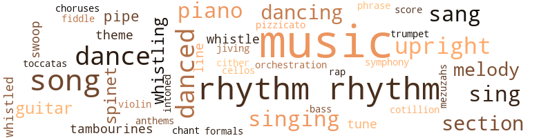
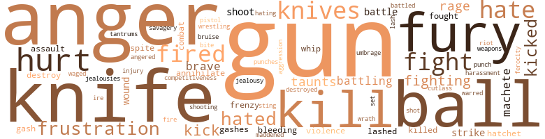
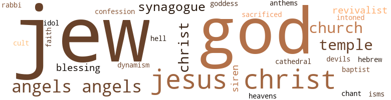

Danger Song, by Rollins, Bryant (1967)
203 music-related terms matched in this text.
Most frequent terms in this topic: music (39); rhythm (19); songs (10); danced (10); dance (9)
ball.n.09
Definition: a lavish dance requiring formal attire
| word | sentence |
|---|---|
| formals | This steady run of parties and formals is enough to get anyone down . " |
bass.n.07
Definition: the member with the lowest range of a family of musical instruments
| word | sentence |
|---|---|
| bass | It was the saddest , most doleful music he ever had heard , all filled with low-register violas and cellos and bass horns moving slowly in and out and among each other to create a melody and a sensation that re - minded Martin , somehow , of Roxbury with its dark , somber streets , thick with summer sounds and smells ; and at the same time , it reminded him , somehow , of Beacon Hill with its rich fullness and deep-carpeted warmth . |
cello.n.01
Definition: a large stringed instrument; seated player holds it upright while playing
| word | sentence |
|---|---|
| cellos | It was the saddest , most doleful music he ever had heard , all filled with low-register violas and cellos and bass horns moving slowly in and out and among each other to create a melody and a sensation that re - minded Martin , somehow , of Roxbury with its dark , somber streets , thick with summer sounds and smells ; and at the same time , it reminded him , somehow , of Beacon Hill with its rich fullness and deep-carpeted warmth . |
chant.n.01
Definition: a repetitive song in which as many syllables as necessary are assigned to a single tone
| word | sentence |
|---|---|
| chant | Nor was the slight figure dancing before them the same Puckish imp who in Latin class their first day had added a solemn " A-men " to Mr. Wilkey 's monotonous and deep-throated reading of the first line of Caesar - Gallia est omnis divisa in partes tres - for in truth , the way he had read it it did sound like a religious chant . |
chorus.n.01
Definition: any utterance produced simultaneously by a group
| word | sentence |
|---|---|
| choruses | The chimes in the Park Street Church were singing their celebratory choruses of Hallelujah ns Martin walked past , along Tremont Street , and he did not recognize the music except by the joy and brutal tonality of steel clanging against steel to make out of it something hard , like the rock at the mouth of the sepulcher , and yet harmonious and beautiful and Easterlike . |
cornet.n.01
Definition: a brass musical instrument with a brilliant tone; has a narrow tube and a flared bell and is played by means of valves
| word | sentence |
|---|---|
| trumpet | And in each of the four angels ' hands was a long-stemmed trumpet . |
cotillion.n.01
Definition: a ball at which young ladies are presented to society
| word | sentence |
|---|---|
| cotillion | Jesusl God knows , when it 's time for her to come out , she 'll be at the friggin ' head of that goddam cotillion . |
dance.n.01
Definition: an artistic form of nonverbal communication
| word | sentence |
|---|---|
| dance | " Dance on top of it , dance through it , dance within the music , the sound , be beautiful , be graceful , be lovely , " Miss Welkind would sing to them as they danced , and when Arla had become familiar with a certain chain of steps leading from one point to another , she would dance on top of the music and within it and she would feel beautiful and graceful and lovely . |
| dance | Now let 's see yawl dance a little . |
| dances | As the neighborhood around the Hebrew school had changed from Jewish to Negro , the enrollment in the Hebrew school had dwindled to the point where the owners of the school moved to the suburbs and rented the building to a Negro Baptist minister who had tried to keep the building as a center for dances , parties , meetings , basketball games and plays , which could he held in a small auditorium located in a comer section of the third floor . |
dance.v.02
Definition: move in a pattern; usually to musical accompaniment; do or perform a dance
| word | sentence |
|---|---|
| dancing | And why is n't she at dancing class ? |
| dancing | It was as if she were dancing in a gravity-less atmosphere , where no muscular ef - fort would be required . |
| dancing | And from out of the midst of the buzzing , humming voices that played there in the air one voice detached itself like a first violin screaming down from out of a great red field of swaying , dancing vibratos . |
| dancing | After school on every day except the three days she went to dancing school , she had to return home to study . |
dance.v.03
Definition: skip, leap, or move up and down or sideways
| word | sentence |
|---|---|
| danced | He remembered going to a circus at the Boston Garden once and seeing a funny clown who tumbled and danced and sat in the laps of women in the audience and how the clown wore shoes that were too big for him and that had flapping soles with which the clown could pick up things from the floor . |
| danced | Then , in the middle of Arla 's read - ing , and perhaps even ignited by the monotony of it and the brazen coloring of the autumn leaves , Robin leaped up from his prone position , danced across the brook atop the rocks that broke its flow and clambered up a low-branched elm tree to a height of thirty feet . |
| danced | Two butterflies , yellow with tiny black spots on their wings , danced a soft duet across the tips of the flowers . |
| danced | Her features danced and wavered , expanded into a hazy confusion and contracted into vague dissolution . |
| dancing | He did not care which of the metamorphic faces dancing before his eyes was the real one . |
| danced | She turned back on her stomach and tried to read the words before her , but they blurred and danced across the paper . |
| dance | " Dance on top of it , dance through it , dance within the music , the sound , be beautiful , be graceful , be lovely , " Miss Welkind would sing to them as they danced , and when Arla had become familiar with a certain chain of steps leading from one point to another , she would dance on top of the music and within it and she would feel beautiful and graceful and lovely . |
| danced | " Dance on top of it , dance through it , dance within the music , the sound , be beautiful , be graceful , be lovely , " Miss Welkind would sing to them as they danced , and when Arla had become familiar with a certain chain of steps leading from one point to another , she would dance on top of the music and within it and she would feel beautiful and graceful and lovely . |
| dance | " Dance on top of it , dance through it , dance within the music , the sound , be beautiful , be graceful , be lovely , " Miss Welkind would sing to them as they danced , and when Arla had become familiar with a certain chain of steps leading from one point to another , she would dance on top of the music and within it and she would feel beautiful and graceful and lovely . |
| dance | Dance erect , dance proudly . " |
| dance | Otherwise there was an awkward uncertainty as if she did not really understand why the formal positions were necessary in order to dance beautifully , to be considered the ultimate in grace . |
| danced | And when Michele danced for them , when called upon by Miss Welkind to demonstrate the correct tech - niques for this or that movement , it was a transfigured Michele they saw . |
| danced | But when Michele danced , then it was like an entirely new per - son . |
| danced | And her class - mates would watch in awe as she danced . |
| dancing | She had been dancing since she was eight . |
| danced | And he laughed and danced across the grass and around boulders toward his home . |
| dance | And the others had begun to dance there on the sidewalk , to jump up and . |
| dance | Yawl know culluhd folks can dance bettah then that . " |
| dance | He wanted to sing or to dance , or to express in some manner what he felt , not for others to see or hear , but only to get it outside of himself . |
guitar.n.01
Definition: a stringed instrument usually having six strings; played by strumming or plucking
| word | sentence |
|---|---|
| guitar | Sud - denly , below me , I heard the sound of a guitar . |
| guitar | There was some - one in the inlet playing a guitar and singing softly . |
| guitar | His guitar was slung across his shoulder , its neck balanced by the crook of his arm . |
| guitar | The vision of the boy standing at the edge of the sea with his guitar over his shoulder would not leave me . |
hymn.n.01
Definition: a song of praise (to God or to a saint or to a nation)
| word | sentence |
|---|---|
| anthems | The anthems were the springtime songs of an occasional bird , the effervescent laughter of two children in front of them walking with their governess , the clang-clang , clang-clang of a streetcar bell somewhere in the distance . |
jive.v.01
Definition: dance to jive music; dance the jive
| word | sentence |
|---|---|
| jiving | In this instance he wanted to be away from these cats , these mewl - ing , braying , hyping , jiving cats who , he now felt , had forced him to hook school and join them at the poolroom . |
mezuzah.n.01
Definition: religious texts from Deuteronomy inscribed on parchment and rolled up in a case that is attached to the doorframe of many Jewish households in accordance with Jewish law
| word | sentence |
|---|---|
| mezuzahs | Sometimes he would touch the mezuzahs nailed to the insides of the door frames for good luck as he walked from one room to another , thinking , in his imagination , the totem might protect him against whatever eerie dangers might lurk in the unseen dark corners of the build - ing . |
music.n.01
Definition: an artistic form of auditory communication incorporating instrumental or vocal tones in a structured and continuous manner
| word | sentence |
|---|---|
| music | Whistled some old blues , creating his own twists and curlicues in the music . |
| music | There were even times when she felt as if she were a part of the music , when ballet made the music visible and the music made the dancers tonally and structurally audible . |
| music | There were even times when she felt as if she were a part of the music , when ballet made the music visible and the music made the dancers tonally and structurally audible . |
| music | There were even times when she felt as if she were a part of the music , when ballet made the music visible and the music made the dancers tonally and structurally audible . |
| music | " Dance on top of it , dance through it , dance within the music , the sound , be beautiful , be graceful , be lovely , " Miss Welkind would sing to them as they danced , and when Arla had become familiar with a certain chain of steps leading from one point to another , she would dance on top of the music and within it and she would feel beautiful and graceful and lovely . |
| music | " Dance on top of it , dance through it , dance within the music , the sound , be beautiful , be graceful , be lovely , " Miss Welkind would sing to them as they danced , and when Arla had become familiar with a certain chain of steps leading from one point to another , she would dance on top of the music and within it and she would feel beautiful and graceful and lovely . |
| music | " Think beauty , think grace , think flight ; move smoothly , sweep and stay , " Miss Welkind 's voice would sing , in rhythm with the music and through it and on top of it and it would become them and they it . |
| music | They would become music and tonal and their moves would anticipate it , lead it , lean on it , follow it , translate it into motion and muscle and movement and more . |
| music | Then , early one evening , late in August , as he wandered among the streets , looking into the lighted , high-ceilinged rooms of those houses with their huge colorful tapestries on the walls , there came to him on the wind from off the nearby Charles River the sound of a lovely , sad music . |
| music | It was the music of a live orchestra and he could not imagine where it came from . |
| music | So he moved toward the sound , toward the river , and the music seemed to waver with the wind that carried it , so that one moment it would seem very close and the next still far off . |
| music | He crossed Storrow Drive onto the embankment of the river and there , on the dirt walk that paralleled the river , were other people , whites , also moving as if attracted magnetically toward the music . |
| music | He stood for a moment beneath the tree in the early-evening dusk , watching the white faces , some eager , lively , others quiet and somber , as the music continued . |
| music | It was the saddest , most doleful music he ever had heard , all filled with low-register violas and cellos and bass horns moving slowly in and out and among each other to create a melody and a sensation that re - minded Martin , somehow , of Roxbury with its dark , somber streets , thick with summer sounds and smells ; and at the same time , it reminded him , somehow , of Beacon Hill with its rich fullness and deep-carpeted warmth . |
| music | The music tugged at Martin and he wanted to join in that stream of white people moving along the path toward it . |
| music | Then the music came to him again , slow and melodic and sad , and it moved around him and into him and lifted him and he moved out from under that umbrage into the flow of people . |
| music | He sensed the glances on the back of his head , certain they were watching him move as he moved westward , with his head down , concentrating on his own motion and the music toward which he moved , and not seeing the red setting sun that polarized the sky at its horizon . |
| music | And he watched and listened as the dark , warm music that moved and undulated like the lazy Charles , swayed within him . |
| music | And what those white boys had told him , in their way , was that that music , lovely , deep , somber and magnetic as it may have been , was not for him . |
| music | Martin lay in his dark room , on his stomach , wondering and hearing in the rear of his mind the sad , low , somber music he had heard earlier in the evening , and wishing he had not dropped the program when he 'd fled from the screaming whites because he now would never find out the name of that music which had , for a moment , seemed to lift him out of his loneliness and al - lowed him to fly . |
| music | Martin lay in his dark room , on his stomach , wondering and hearing in the rear of his mind the sad , low , somber music he had heard earlier in the evening , and wishing he had not dropped the program when he 'd fled from the screaming whites because he now would never find out the name of that music which had , for a moment , seemed to lift him out of his loneliness and al - lowed him to fly . |
| music | The music , the music . |
| music | The music , the music . |
| music | There was within him so much music . |
| music | He lay on his bed that night thinking of that music he had heard and of its power and suddenly once more found himself moved by his own imagination back onto the path , faced again by those white youths swearing and yelling at him and challenging him and attempting to humiliate him think - ing they knew him . |
| music | The chimes in the Park Street Church were singing their celebratory choruses of Hallelujah ns Martin walked past , along Tremont Street , and he did not recognize the music except by the joy and brutal tonality of steel clanging against steel to make out of it something hard , like the rock at the mouth of the sepulcher , and yet harmonious and beautiful and Easterlike . |
| music | They realized suddenly that they had misjudged him , that they had not really known him or seen him until now ; that they had not seen this beauty in him and this ability to release him - self in music . |
| music | Then the music stopped , almost as if the dawn were a signal . |
| music | There are three hundred already signed up for the tutorial programs , more than a hundred for Martin 's basketball league and another hundred for the arts-and-crafts , drama and music programs . |
| music | " Do you like classical music ? " she asked . |
| music | And his playing , the uniqueness of it which had brought raves from critics and fame and glory and respect and acceptance , was the mixture of classics and blues and jazz and Gospel music that made it accessible to all types of people with all kinds of backgrounds . |
| music | And occasionally , when he had played a section of the music with particular depth , the conductor would glance back at him and nod and smile and that , again , would make him feel good inside and he would feel a unity with the orchestra and would sway with the music and exaggerate the arc of his arms and the touch of his fingers on the keys . |
| music | And occasionally , when he had played a section of the music with particular depth , the conductor would glance back at him and nod and smile and that , again , would make him feel good inside and he would feel a unity with the orchestra and would sway with the music and exaggerate the arc of his arms and the touch of his fingers on the keys . |
| music | Afterward the applause fell like rain on an ashcan top and he played four encores before they would let him go and he was surrounded , backstage , by people he had known who had now , suddenly , seen in him a fresh extension of themselves , each of them feeling that his playing reflected his own past relationships with Martin and that he carried into his music the influence of their personal relationship . |
| music | She put her lips close to his ear and he no longer could hear Coltrane , as such , though he sensed , the drive and the frenzy of the music and then she said his name : ' ' Martin , " and he listened to her breathing , then she said to him : " I love you . " |
| music | The room was full of moving , swaying blacks seated and clapping in a rhythm only Gospel music can accom - plish : a rhythm that is at once a beat and a melody . |
| music | The rhythm of eternal recur - rence , the grand rhythm of the worlds making olf-tempo swings around the sun ; of the vibrant rhythm of the Gospel music here . |
| music | And above it all , above the words and above the tambourines , rang the shouting , plainting voice of Reverend Owens , his words soaring and weav - ing in and out of the music . |
| music | He enjoyed the music of the voices of his friends and the camaraderie of it . |
orchestration.n.01
Definition: an arrangement of a piece of music for performance by an orchestra or band
| word | sentence |
|---|---|
| orchestration | He sat down and spread out the first score beside his place setting and began to go over his piano solos in his mind , re-creating the orchestration from the previous week 's rehearsals . |
phrase.n.02
Definition: a short musical passage
| word | sentence |
|---|---|
| phrase | And it sounded to Martin through the dullness of his pain like the agitated murmur of angered yellow jackets , making it impossible to distinguish one voice from another , except for an occasional phrase which his mind caught and grasped and handled for a moment , then re - leased into the spring air without remembering . |
piano.n.01
Definition: a keyboard instrument that is played by depressing keys that cause hammers to strike tuned strings and produce sounds
| word | sentence |
|---|---|
| piano | He ought to ring the doorbell and ask to stay inside until the rain stopped but the two hours of Arla 's piano practice were strictly private . |
| piano | He had not noticed when the piano had stopped its monotonous musical rote . |
| piano | And that was the only sound in the house : the repetitious tolling of Arla 's piano exercises . |
| piano | But in the open center of the room with the piano planking rhythmically at this tune or that , she felt more at home with herself . |
| piano | He sat down and spread out the first score beside his place setting and began to go over his piano solos in his mind , re-creating the orchestration from the previous week 's rehearsals . |
| piano | Sim and Pres and Marcus , who smiled at him knowingly and nodded , and all the others he had not seen for years during the long time he had been in seclusion , studying piano . |
| piano | They sat a moment , allowing the rhythm and bald sound of an old planking piano to move through them . |
pipe.n.04
Definition: a tubular wind instrument
| word | sentence |
|---|---|
| pipes | Robin recalled the oc - casions he had played at being grown-up : the times he had donned his father 's hat , snatched his mother 's umbrella and swag - gered about the house with one of his father 's pipes in his mouth . |
| pipe | It smelled of his pipe and his tobacco and the leather chair in its center smelled of the rawhide jacket he sometimes wore in the winter . |
| pipes | Beside the chair was a small table with his humidor surrounded by two rows of pipes and , behind the chair , a pulley lamp which hung on a length of wire from the ceiling . |
pizzicato.n.01
Definition: a note or passage that is played pizzicato
| word | sentence |
|---|---|
| pizzicato | " Soft moon rays drip upon the snowy roofs And hill , and spatter with a splash of quivering light Through all the static and electric air of night While crunch of crusted snow beneath gay feet Reverberates unto the hills to merge With the vibrato of a youthful laugh : The peal and pizzicato of young joy . " |
rap.n.05
Definition: genre of African-American music of the 1980s and 1990s in which rhyming lyrics are chanted to a musical accompaniment; several forms of rap have emerged
| word | sentence |
|---|---|
| rap | Sometimes they talked rap - idly , excitedly , with a youthful liveliness in their voices ; other times they walked without words , each enjoying his mute role in the partnership : a brown-skinned Negro boy so slight and frail and his eyes furtive and nervous , and a lean , hard white boy with rimless glasses and unshorn , unkempt flaxen-colored hair and deep blue eyes that fired sparks when he laughed . |
rhythm.n.04
Definition: the arrangement of spoken words alternating stressed and unstressed elements
| word | sentence |
|---|---|
| rhythm | Inside the semicircle the usual game of three-on-three was in progress and six perspir - ing blacks were grunting and moving , picking , jumping , shooting , elbows flying , fake-drive-pass , shoot-rebound , a fugue of black and motion and rhythm punctuated by the staccatoed slap of the ball on concrete and underscored by the shouting of the forty or so other blacks wailing their turn to challenge the winners . |
| rhythm | The entire yard was alive with sounds which echoed off the tall brick school building , and Apple felt a comfort of familiarity surround him and felt the rhythm of his walk move into and among the multitonal sounds and reverberations that caressed the building as in slow motion and came to him belatedly , as in a dream . |
| rhythm | They were always together and they walked with the peculiar rhythm of two persons used to be - ing with each other . |
| rhythm | Their heads bobbed , their shoulders lurched , their hips swayed and it all was in the rhythmic gait of two young colts loping across a green meadow in summertime when the grass has just begun to grow long after the first mowing , and an onlooker can see only the visible calves and trunks of their bodies which sway almost as if of their own volition , each with a separate rhythm and their adjacent rhythms creating a third rhythm , all its own and independent . |
| rhythms | Their heads bobbed , their shoulders lurched , their hips swayed and it all was in the rhythmic gait of two young colts loping across a green meadow in summertime when the grass has just begun to grow long after the first mowing , and an onlooker can see only the visible calves and trunks of their bodies which sway almost as if of their own volition , each with a separate rhythm and their adjacent rhythms creating a third rhythm , all its own and independent . |
| rhythm | Their heads bobbed , their shoulders lurched , their hips swayed and it all was in the rhythmic gait of two young colts loping across a green meadow in summertime when the grass has just begun to grow long after the first mowing , and an onlooker can see only the visible calves and trunks of their bodies which sway almost as if of their own volition , each with a separate rhythm and their adjacent rhythms creating a third rhythm , all its own and independent . |
| rhythm | And from the free verse of his adolescence there evolved an essential rhythm , an essential motion , floating up and out of the disorder and confusion like a balloon swayed up and down and left and right by the prevailing winds at any particular moment and influenced by the very quality of its rubber and the consist - ency and specificity of the air within . |
| rhythms | There was no trace - able pattern other than the pattern produced by the jangling rhythms of a hlack adolescence moving through and within a world it could not understand and could not feci secure in . |
| rhythm | And from the free verse of his adolescence there evolved an essential rhythm , an essential motion , floating up and out of the disorder and confusion like a balloon swayed up and down and left and right by the prevailing winds at any particular moment and influenced by the very quality of its rubber and the consist - ency and specificity of the air within . |
| rhythms | There was no trace - able pattern other than the pattern produced by the jangling rhythms of a black adolescence moving through and within a world it could not understand and could not feel secure in . |
| rhythm | " Think beauty , think grace , think flight ; move smoothly , sweep and stay , " Miss Welkind 's voice would sing , in rhythm with the music and through it and on top of it and it would become them and they it . |
| rhythms | And when it was over , and the sky was totally dark , and the others had gone and left the ground all cluttered with programs and the only sound remaining was the lonely , hollow , clack-clack of the groundsmen taking in the fold - ing chairs , then he rose and , picking up a wrinkled program from the grass , walked back downstream along the path , still dreaming of sounds and rhythms , timings , moods . |
| rhythms | He imagined the sounds and motions as he , the child protégé and youngest ever to conduct the Boston Pops , commanded chords and rhythms and moods as his friends in the Pythons and his classmates at school and his parents and sisters and neighbors sat in the first rows awed by his prowess and amazed that they had not seen it in him before . |
| rhythm | They sat a moment , allowing the rhythm and bald sound of an old planking piano to move through them . |
| rhythm | The rhythm became more urgent ; the singing more vital . |
| rhythm | The room was full of moving , swaying blacks seated and clapping in a rhythm only Gospel music can accom - plish : a rhythm that is at once a beat and a melody . |
| rhythm | The room was full of moving , swaying blacks seated and clapping in a rhythm only Gospel music can accom - plish : a rhythm that is at once a beat and a melody . |
| rhythm | A chick 's mind gets lost in the rhythm and do and there ai n't no escapin ' from what 's inside and responds to the natural niggah in us all , " and she sat feeling the rhythm and the clashing , blending , soaring chords . |
| rhythm | A chick 's mind gets lost in the rhythm and do and there ai n't no escapin ' from what 's inside and responds to the natural niggah in us all , " and she sat feeling the rhythm and the clashing , blending , soaring chords . |
| rhythm | The rhythm , the rhythm . |
| rhythm | The rhythm , the rhythm . |
| Rhythm | " Rhythm is the elemental force . |
| Rhythm | Rhythm is the life-bearing force . |
| rhythm | The rhythm of eternal recur - rence , the grand rhythm of the worlds making olf-tempo swings around the sun ; of the vibrant rhythm of the Gospel music here . |
| rhythm | The rhythm of eternal recur - rence , the grand rhythm of the worlds making olf-tempo swings around the sun ; of the vibrant rhythm of the Gospel music here . |
| rhythm | The rhythm of eternal recur - rence , the grand rhythm of the worlds making olf-tempo swings around the sun ; of the vibrant rhythm of the Gospel music here . |
| Rhythm | Rhythm , not love nor ego nor id , is the essential , life-giving force . |
score.n.02
Definition: a written form of a musical composition; parts for different instruments appear on separate staves on large pages
| word | sentence |
|---|---|
| score | He glanced at the score , then back up at the girl . |
section.n.01
Definition: a self-contained part of a larger composition (written or musical)
| word | sentence |
|---|---|
| section | A group of them , he and his friends , were sitting in a section of the class near the rear of the room . |
| section | Other - wise , silence , a thick and pendant disquiet , an almost apprehen - sive silence as if the entire building were waiting for the stillness to be shattered like a fragile section of plate glass . |
| section | As the neighborhood around the Hebrew school had changed from Jewish to Negro , the enrollment in the Hebrew school had dwindled to the point where the owners of the school moved to the suburbs and rented the building to a Negro Baptist minister who had tried to keep the building as a center for dances , parties , meetings , basketball games and plays , which could he held in a small auditorium located in a comer section of the third floor . |
| section | The gymnasium occupied the entire rear section of the building , running lengthwise . |
| section | And occasionally , when he had played a section of the music with particular depth , the conductor would glance back at him and nod and smile and that , again , would make him feel good inside and he would feel a unity with the orchestra and would sway with the music and exaggerate the arc of his arms and the touch of his fingers on the keys . |
| section | " Well , I certainly am happy to find out that there are some people in this section of the country who are truly full of the spirit of brotherhood and equality , " the light-skinned Negro woman was saying . |
sing.v.02
Definition: produce tones with the voice
| word | sentence |
|---|---|
| sang | She was light-skinned and pretty and had long straight hair and at the Christmas pageant every year at school she sang " O Holy Night , " and threw her chest out lustily and heaved her slim but certain voice out over the assembly hall , and Martin , sitting , black , in its midst , would sigh deeply and cross his fingers . |
| sing | " Dance on top of it , dance through it , dance within the music , the sound , be beautiful , be graceful , be lovely , " Miss Welkind would sing to them as they danced , and when Arla had become familiar with a certain chain of steps leading from one point to another , she would dance on top of the music and within it and she would feel beautiful and graceful and lovely . |
| sing | " Think beauty , think grace , think flight ; move smoothly , sweep and stay , " Miss Welkind 's voice would sing , in rhythm with the music and through it and on top of it and it would become them and they it . |
| sing | And he could not understand how his white teachers at school could smile at him one moment , then direct the white and black students in the class to sing " Old Black Joe " the next . |
| singing | The chimes in the Park Street Church were singing their celebratory choruses of Hallelujah ns Martin walked past , along Tremont Street , and he did not recognize the music except by the joy and brutal tonality of steel clanging against steel to make out of it something hard , like the rock at the mouth of the sepulcher , and yet harmonious and beautiful and Easterlike . |
| sing | Martin walked a little farther , until he again reached the coiner of Park Street where the tall white-steepled church was and the throaty chimes were still sing - ing Easter songs . |
| sang | ( To Arla 's house , to Arla 's house will I go , he sang be - neath his breath . |
| sang | She sang with a sweet so - prano voice and when she finished and the applause had stopped , Mr. Ruderman , the school principal , walked out onto the stage and called Martin 's name : " Martin Williams will now join Fay in a duet of ' O Holy Night . |
| sing | '" And Martin moved from his seat onto the stage , hearing the sniggers and chortles of his classmates , be - cause they did not know that he could sing . |
| sing | Then he and Fay began , slowly , softly at first , then ex - panded into broad , colorful swaths of sound , their voices power - ful and tremulous , interweaving , interlocking , exchanging , grow - ing , descending and filling the auditorium with sound and his classmates and teachers and the parents sat before him amazed , awed , delicately respectful , for they had not known that he could sing . |
| sang | And as they sang Fay moved a bit closer to him and he felt her hand touch his , gently at first . |
| sang | He sang in a soft , low voice . |
| sang | The songs he sang were a strange mixture of old , traditional folk songs and Negro blues songs . |
| sang | And it swept her away so that she forgot herself and her fears and her propriety , and her head dipped from side to side as it had once long ago , and she closed her eyes and she clapped with the rest and sang the wordless song and shouted into the noisy moving room with the others . |
| sing | He wanted to sing or to dance , or to express in some manner what he felt , not for others to see or hear , but only to get it outside of himself . |
singing.n.01
Definition: the act of singing vocal music
| word | sentence |
|---|---|
| singing | And through it Miss Welkind strode along the line of them if they were at the barre , or in among them if they were au milieu , singing to them , " Knees over your toes . |
| singing | It was a season for singing and for bells to be chiming Easter songs and for others to be reminiscing , as if they had been there them - selves , about the Resurrection of Christ . |
| singing | The anger overtook Martin and moved through him like the blood that ran , and he picked up the small hatchet that lay at his feet , and in his anger , in the rash , un - controllable anger , he swung the hatchet at the gleaming white faces standing jeering at him in the black convertible , at the young white bastards singing Niggah ! |
| singing | There was some - one in the inlet playing a guitar and singing softly . |
| singing | The singing reached them in waves of crescendos and diminuendos : the rhythmic but dole - ful lament of a spiritual . |
| singing | The rhythm became more urgent ; the singing more vital . |
song.n.01
Definition: a short musical composition with words
| word | sentence |
|---|---|
| song | Then , from somewhere in the back of his mind , there came to him the quiet , moving melody that had originally attracted him toward the Esplanade earlier in the evening and he realized then that he had dropped his program when the whites pushed him and could not now know the name of that song . |
| songs | The anthems were the springtime songs of an occasional bird , the effervescent laughter of two children in front of them walking with their governess , the clang-clang , clang-clang of a streetcar bell somewhere in the distance . |
| songs | " The leaves return and the flowers and the birds come back with their songs . " |
| songs | It was a season for singing and for bells to be chiming Easter songs and for others to be reminiscing , as if they had been there them - selves , about the Resurrection of Christ . |
| songs | The word seemed strangely out of place in that atmosphere , on that particular day , only eight days before Easter and with the chimes tuning Eastertime songs . |
| songs | Martin walked a little farther , until he again reached the coiner of Park Street where the tall white-steepled church was and the throaty chimes were still sing - ing Easter songs . |
| songs | The bells still were chiming Easter songs . |
| song | They fin - ished their song and there was applause and they bowed first toward the audience , then toward each other , and Fay bowed low and Martin looked down the opening in her low dress and saw her large swaying breasts , and she smiled coyly at him as they stood upright again , and squeezed his hand secretly and he turned quickly and walked , with her , off the stage , hoping no one had noticed the lump in his pants . |
| song | It was their language and their song . |
| songs | The songs he sang were a strange mixture of old , traditional folk songs and Negro blues songs . |
| songs | The songs he sang were a strange mixture of old , traditional folk songs and Negro blues songs . |
| songs | The songs he sang were a strange mixture of old , traditional folk songs and Negro blues songs . |
| song | And it swept her away so that she forgot herself and her fears and her propriety , and her head dipped from side to side as it had once long ago , and she closed her eyes and she clapped with the rest and sang the wordless song and shouted into the noisy moving room with the others . |
| songs | They were words from songs he knew so well and had heard so often that they came to him automatically when he began to write . |
spinet.n.02
Definition: early model harpsichord with only one string per note
| word | sentence |
|---|---|
| spinet | Peter McMahon rose from the divan on which he had been sitting and walked slowly , thoughtfully , to the spinet which stood in a far corner of the room , between the large picture window on one side of the house and a smaller window on the other side . |
| spinet | A bust of Beethoven sat on a small table next to the spinet . |
| spinet | Mr. Mc - Mahon sat at the spinet and began to play something soft and dark , dominated by the lower-register chords . |
| spinet | Somewhere in the distance there continued the slow , melodic ruminations of the spinet . |
swoop.n.01
Definition: (music) rapid sliding up or down the musical scale
| word | sentence |
|---|---|
| swoop | A great , strong bird , whose eyes and mind and Heart have been lifted and broadened by the sight of other birds flying into the clouds and toward the sun and swoop - ing , diving near him and crying to him , in their way , to join them in flight ; it is the natural desire to fly with them and share with them the views of life from those apparent heights and to experience with them the delicious sensations of the wind against their wings and the earth rocketing past below and receding and growing as they rise and dive and swoop and bank and glide . |
| swoop | A great , strong bird , whose eyes and mind and Heart have been lifted and broadened by the sight of other birds flying into the clouds and toward the sun and swoop - ing , diving near him and crying to him , in their way , to join them in flight ; it is the natural desire to fly with them and share with them the views of life from those apparent heights and to experience with them the delicious sensations of the wind against their wings and the earth rocketing past below and receding and growing as they rise and dive and swoop and bank and glide . |
symphony.n.01
Definition: a long and complex sonata for symphony orchestra
| word | sentence |
|---|---|
| symphony | The noises from each separate apartment of each separate house came down to her in a symphony of black dismalness , for she knew of the lives those black citizens lived and of their hopelessness . |
tambourine.n.01
Definition: a shallow drum with a single drumhead and with metallic disks in the sides
| word | sentence |
|---|---|
| tambourines | " Evnin ' service full the chu ' chgoers , " Martha said , and the sounds of hand-clapping and tambourines reached them through the closed doors with the pulsating chink-a chink-a chink-a . |
| tambourines | And above it all , above the words and above the tambourines , rang the shouting , plainting voice of Reverend Owens , his words soaring and weav - ing in and out of the music . |
theme.n.03
Definition: (music) melodic subject of a musical composition
| word | sentence |
|---|---|
| themes | He would always be laughed at , in one way or another , and his life would always be repetitions on the themes of his youth when any vulnerable point in a person was a point to be attacked in a defensive aggression . |
| theme | As he played and struck upon a blues-Gospel theme he could hear an occasional " Yeah ! " or " Do it , baby ! " from among his old friends in the front row ; and as he soared through leaping charismatic , fantasy-like toccatas and dug deeply into rich , basal chords that rang of the classics , a wispy sigh would pass from the whites in the audience and it would make him feel good and he would reach higher and deeper to plumb new meanings and new richnesses out of the score . |
toccata.n.01
Definition: a baroque musical composition (usually for a keyboard instrument) with full chords and rapid elaborate runs in a rhythmically free style
| word | sentence |
|---|---|
| toccatas | As he played and struck upon a blues-Gospel theme he could hear an occasional " Yeah ! " or " Do it , baby ! " from among his old friends in the front row ; and as he soared through leaping charismatic , fantasy-like toccatas and dug deeply into rich , basal chords that rang of the classics , a wispy sigh would pass from the whites in the audience and it would make him feel good and he would reach higher and deeper to plumb new meanings and new richnesses out of the score . |
tone.v.01
Definition: utter monotonously and repetitively and rhythmically
| word | sentence |
|---|---|
| intoned | There was disgust in the way she intoned the words , in the lack of emotion . |
tune.n.01
Definition: a succession of notes forming a distinctive sequence
| word | sentence |
|---|---|
| tune | But in the open center of the room with the piano planking rhythmically at this tune or that , she felt more at home with herself . |
| line | Nor was the slight figure dancing before them the same Puckish imp who in Latin class their first day had added a solemn " A-men " to Mr. Wilkey 's monotonous and deep-throated reading of the first line of Caesar - Gallia est omnis divisa in partes tres - for in truth , the way he had read it it did sound like a religious chant . |
| melody | It was the saddest , most doleful music he ever had heard , all filled with low-register violas and cellos and bass horns moving slowly in and out and among each other to create a melody and a sensation that re - minded Martin , somehow , of Roxbury with its dark , somber streets , thick with summer sounds and smells ; and at the same time , it reminded him , somehow , of Beacon Hill with its rich fullness and deep-carpeted warmth . |
| melody | Then , from somewhere in the back of his mind , there came to him the quiet , moving melody that had originally attracted him toward the Esplanade earlier in the evening and he realized then that he had dropped his program when the whites pushed him and could not now know the name of that song . |
| melody | He knew the hour was late and that he should get up now and go home , but a sense of despair had begun to swell inside him and it grew and expanded , carried on the wings of the name - less , lovely melody that wavered somewhere in the rear of his mind , and finally overflowed his body and his mind and he be - gan to weep quietly under the bush in the night . |
| melody | The melody and the memory now were purged from his mind for a time , and the fury of his dreamings reminded him that he would have to carry his blade with him ! |
| tune | An ' ah ai n't met a white liberal yet wo n't change his tune when his dottah start actin ' liberal 's he been talkin ' . |
| melody | The room was full of moving , swaying blacks seated and clapping in a rhythm only Gospel music can accom - plish : a rhythm that is at once a beat and a melody . |
| lines | The impulse to reach out and touch him grew stronger ; to reach out and place her hand on his arm which was so near and brown with strong lines of veins running along be - neath its flesh . |
upright.n.02
Definition: a piano with a vertical sounding board
| word | sentence |
|---|---|
| upright | He sat upright , quickly , and looked around . |
| upright | But he had sat upright , suddenly , knowing there was something he ought to remember , knowing there was something else to be re - membered , then having it drop on him abruptly , like a piece of lead in his stomach , that he had to sharpen his blade and that was why he had wanted to wake early . |
| upright | Then a hand cupped his chin and pulled his head upright , violently , and he suddenly imagined that somewhere , sometime , it all had happened be - fore . |
| upright | But the hand still cupped his head , holding it upright , and now Flip 's voice floated down to him from out of the redness that hovered above his closed eyelids . |
| upright | And once he had a focus for his anger , once he had a target at which to aim , his body began to recover itself and he stood , leaning heavily still against a wall , but upright and ready to battle back if another blow should come . |
| upright | Martin glanced at the woman and her brood and re - membered how he had sat like that years before with his mother and how he had had to put his hands in his lap and sit upright and not fiddle with the buttons on his jacket or bite his fingernails or scratch his head or stare at any of the other , white people in the store . |
| upright | They fin - ished their song and there was applause and they bowed first toward the audience , then toward each other , and Fay bowed low and Martin looked down the opening in her low dress and saw her large swaying breasts , and she smiled coyly at him as they stood upright again , and squeezed his hand secretly and he turned quickly and walked , with her , off the stage , hoping no one had noticed the lump in his pants . |
| upright | Then he did wake and he sat bolt upright in his bed , perspiring and hearing only the soft breathing of his sister somewhere to his left and near him . |
violin.n.01
Definition: bowed stringed instrument that is the highest member of the violin family; this instrument has four strings and a hollow body and an unfretted fingerboard and is played with a bow
| word | sentence |
|---|---|
| violin | And from out of the midst of the buzzing , humming voices that played there in the air one voice detached itself like a first violin screaming down from out of a great red field of swaying , dancing vibratos . |
| fiddle | Martin glanced at the woman and her brood and re - membered how he had sat like that years before with his mother and how he had had to put his hands in his lap and sit upright and not fiddle with the buttons on his jacket or bite his fingernails or scratch his head or stare at any of the other , white people in the store . |
whistle.n.01
Definition: the sound made by something moving rapidly or by steam coming out of a small aperture
| word | sentence |
|---|---|
| whistlings | There was no justifying this dichotomy , and he remained awake with it and the fear , the long dark night through , with sad , long whistlings of old blues and the wailings of lonely cats in the alley coming through his window to him , keeping him awake . |
whistle.v.01
Definition: make whistling sounds
| word | sentence |
|---|---|
| whistled | In the street a man whistled to himself as he walked . |
| Whistled | Whistled some old blues , creating his own twists and curlicues in the music . |
| whistling | And Martin told himself that it was the man 's whistling that kept him awake . |
| whistling | He was conscious all through that horrid , stark night , with the tomcats crying and the sad , soft whistling coming in from outside , of the fear . |
| whistle | Some white people standing on the sidewalks turned to watch and one man , on the sidewalk opposite Martin , yelled at the white boys and called them dirty , filthy bastards and a cop who was directing traffic at the comer of Park Street , in front of the church , was running now , down the center of Tremont Street , blowing his whistle and shouting for the boys in the car to stop . |
| whistle | And the divine words , coming as they did mixed with the tolling of the Easter bells and the voices of his daydream children and the whistle of the cop on the corner , now directing traffic again , seemed to answer all of his questions and settle things in his mind and relieve the necessity for fighting or for caring or for making a decision . |
| whistling | The darkness surrounded the two forms , one sitting slumped in a soft chair and the other lying , both breathing soft , cloying breaths into the air as the wind blew outside and newspapers skittered along the alley and a solitary man clicked his heels on the sidewalk as he moved along Hollander Street , black as the night , whistling blues and totally unaware that in the house he was now passing two people , one young boy and one older sister , slept deeply and at last a sleep achieved at a cost neither of them could assess . |
zither.n.01
Definition: a musical stringed instrument with strings stretched over a flat sounding board; it is laid flat and played with a plectrum and with fingers
| word | sentence |
|---|---|
| cither | He would go out and he would be in Franklin Park at nine-thirty and there was nothing cither of them could do about it . |
370 violence-related terms matched in this text.
Most frequent terms in this topic: anger (37); knife (33); gun (25); ball (19); fury (18)
aggression.n.01
Definition: a disposition to behave aggressively
| word | sentence |
|---|---|
| aggression | He would always be laughed at , in one way or another , and his life would always be repetitions on the themes of his youth when any vulnerable point in a person was a point to be attacked in a defensive aggression . |
anger.n.01
Definition: a strong emotion; a feeling that is oriented toward some real or supposed grievance
| word | sentence |
|---|---|
| anger | His voice was louder now and the anger of his fear had crept into it . |
| anger | And she knew that he would use that strength against her , for the anger had just begun to creep into his voice and into his face which be - fore had shown nothing . |
| anger | And it was half a cry and half an eruption of anger . |
| anger | The pain washed over him in place of the fear and the anger and it created a strange red ringing in his eyes and ears and peculiar sudden lumps on his face . |
| anger | And she stopped , not realizing until that moment , as she stood over him and saw the defenselessness of his position and the tears forming rivulets on his face , how young he was and how easily shocked , and how great her anger had been that he had forced her to do that . |
| anger | And Martin would lie feeling all the tension and would hear the anger and disgust and frustration in his mother 's voice , and would be afraid for her and afraid for his father and his sisters , and their whole world seemed like gauze . |
| anger | This expression was visible to Robin for only a moment , for Mrs. Mc - Mahon moved quickly to the base of the stairs and stood , with her back to Robin , looking up into the darkness as if uncertain as to what to do with her anger . |
| anger | Crying out of her anger and impotence and fear . |
| anger | And Martin chased down the other three , and one by one , with an enormous anger flooding his mind and blotting his senses , swung hard and brought the sheer machete down upon the heads of the other running hoys . |
| ire | Peter 's voice had softened somewhat , but the ire still was there . |
| anger | But that second pain , that second blow across his face jolted him into a dizzy kind of physical consciousness ; it revived him to the point of anger ; it resuscitated his body while his mind continued to reel . |
| anger | And once he had a focus for his anger , once he had a target at which to aim , his body began to recover itself and he stood , leaning heavily still against a wall , but upright and ready to battle back if another blow should come . |
| anger | His anger at Mr. McMahon was increasing with the increasing awareness of what that man had done : of the lies he had told him , of the lukewarm evenings spent alone restlessly and sleep - lessly , of the afternoons spent sitting under the trees on his fathers side of the land or sitting on the soft moss by the stream , waiting . |
| anger | And as he walked , there grew in him the belated anger of the previous moments . |
| anger | There grew an anger out of the impotence ; out of the inability to react physically at that moment ; out of the inability to shout back at them some word that would have destroyed them as swiftly as their word had destroyed him ; and an anger at the knowledge that there was no word in his vocabulary that could so quickly sting them and pin them to their pasts ; there was no arrow in his quiver that could so surely true into its target and find the most vulnerable spot and humiliate them so absolutely . |
| anger | There grew an anger out of the impotence ; out of the inability to react physically at that moment ; out of the inability to shout back at them some word that would have destroyed them as swiftly as their word had destroyed him ; and an anger at the knowledge that there was no word in his vocabulary that could so quickly sting them and pin them to their pasts ; there was no arrow in his quiver that could so surely true into its target and find the most vulnerable spot and humiliate them so absolutely . |
| anger | And his anger expanded into a physical need to strike out at someone or something . |
| anger | Out of the anger and the frustration and the impotence and the vulnerability and the turmoil that were in his mind . |
| anger | Ex - cept that he knew without having the words to think it that the anger and the fury were not dead , but dormant and that one day they would rise , like the phoenix , out of their own ashes more beautiful and more ferocious than ever before , and that one time he would not be able to hold it in him and it would explode in a great kaleidoscope of colors and passions and energy and fury . |
| anger | And there were other things he wanted to say , but his anger blocked his mind and he turned and ran the few yards up the hallway to his room near the front of the house and slammed the door and did not turn on the light but fell face down across his bed . |
| anger | All of the unexpressed despair of his mother and the anger of his sisters and the unknown frus - tration of his father . |
| anger | And Martin felt the hot anger in him and the impotence , but mostly the anger this time . |
| anger | And Martin felt the hot anger in him and the impotence , but mostly the anger this time . |
| anger | The anger overtook Martin and moved through him like the blood that ran , and he picked up the small hatchet that lay at his feet , and in his anger , in the rash , un - controllable anger , he swung the hatchet at the gleaming white faces standing jeering at him in the black convertible , at the young white bastards singing Niggah ! |
| anger | The anger overtook Martin and moved through him like the blood that ran , and he picked up the small hatchet that lay at his feet , and in his anger , in the rash , un - controllable anger , he swung the hatchet at the gleaming white faces standing jeering at him in the black convertible , at the young white bastards singing Niggah ! |
| anger | The anger overtook Martin and moved through him like the blood that ran , and he picked up the small hatchet that lay at his feet , and in his anger , in the rash , un - controllable anger , he swung the hatchet at the gleaming white faces standing jeering at him in the black convertible , at the young white bastards singing Niggah ! |
| anger | the others were left standing on the sidewalk , watching him run with mixed feelings of anger , sur - prise and admiration . |
| anger | Inside of her the anger was growing , and Peter sensed it but was propelled by the feeling of rightness in his own mind . |
| anger | She knew these things intuitively and she felt the anger and hurt without knowing , actually , what was their source . |
| anger | That same wisp of anger ran through her as she had experienced earlier in the day at the feeling that he was holding something worthwhile back from her . |
| anger | She felt anger and a sense of having been cheated or robbed . |
| anger | Sometimes the voice came to him low and guttural and serious and other times it was loud and it echoed and was filled with curses and punctuated with a fist , pounded on a desk , " I want you to understand , " he was saying , speaking slowly now , his voice under control but tinged with anger and forced restraint , " that I 'm not a bigoted man . |
| anger | We did everything you asked , " the anger was beginning again to show itself in his voice , " everything ! " |
| anger | And now he was scream - ing and straining to free himself and it hurt him intensely in his groin but his anger was greater than the pain . |
| anger | He remembered what Martha had told him the day before and he lay for an hour feeling the waves of anger and fear wash over him in swiftly changing moods . |
| anger | The people who walked on it had not cleaned it because it was sometimes easier to sit inside a warm , lighted house and get high on wine or sit watching TV than to face the truly sordid nature of their lives ; and it was sometimes less painful and less crippling to take one 's passion out on one 's wife in a furious fit of anger than to admit the essential futility of the situation and the essential ferocity of one 's hate against whites . |
| anger | Beautiful in its anger . |
| anger | There was no anger in her movements . |
anger.v.02
Definition: become angry
| word | sentence |
|---|---|
| angered | Then he tried to move her , gently , without hurting her , to move her to one side , but it seemed she was anchored at the bottom and it fright - ened him and angered him that he could not lift her or move her aside with the ease he had expected , so he reared to one side to put his weight behind a thrust that would send her across the small room and out of his way . |
battle.v.01
Definition: battle or contend against in or as if in a battle
| word | sentence |
|---|---|
| battling | The crowd there and its shouts were at once their reason for battling and their reason for wishing they did not have to battle . |
| battling | On the hill , in the distance , over the shoulders of the two battling blacks , stood two figures , motionless , both dressed in black ; two rigid silhouettes , outlined and barely visible against the gray stone fagade of the Williams School . |
| battled | His nature revolted at the aspects of life that seemed most important to them , and his young mind swam in the thick seas of his desires and battled for survival . |
| battling | Eventually a man grows weary of battling , he would tell her , weary of being rejected and refused , and he takes a job as a porter because there 's nothing else . |
| battle | And once he had a focus for his anger , once he had a target at which to aim , his body began to recover itself and he stood , leaning heavily still against a wall , but upright and ready to battle back if another blow should come . |
| battle | In younger years she had tried it - to take sides with her daughter against Peter - but it always ended the same way , with Peter 's strength and authority overpowering them both ; with Arla under more severe punishment for having at - tempted to battle back ; and with Helen made to feel guilty and unfaithful and somewhat stupid . |
| battle | And she could not battle him on those grounds . |
| battling | In midwinter of that , her eight - eenth year , however , her mind drew even with her actions and she realized there was no hope in battling her father on that is - sue . |
| combat | Would she and Martha be able to pull together the few other social and civic centers into some kind of organized program to work against delinquency and to combat the physical filth of the area ? |
bleeding.n.01
Definition: the flow of blood from a ruptured blood vessel
| word | sentence |
|---|---|
| bleeding | He swung wide at the boy 's white head and the sharp , hard edge of the machete penetrated the flesh and bone of the ofay bastard and the boy screamed and the others screamed and started to run as the bleeding loud white sank to the ground . |
| bleeding | Then the cops come around the corner , running hard , still yelling , and Flip gets them as they come by , his knife deep into their stomachs so that they scream long , san - guine screams and fall to the ground bleeding and writhing and Flip and he flee on down the alley leaving the paddy cops on the ground . |
bruise.n.01
Definition: an injury that doesn't break the skin but results in some discoloration
| word | sentence |
|---|---|
| bruise | In the bathroom mirror his face shone sweaty and around his left eye was a large , ugly bruise of black and blue glowing through his brown skin . |
competitiveness.n.01
Definition: an aggressive willingness to compete
| word | sentence |
|---|---|
| competitiveness | The ferocious competitiveness of their gang and the continual hyping , jiving , bullshitting and the necessity to stay on top of it would not be there . |
craze.n.02
Definition: state of violent mental agitation
| word | sentence |
|---|---|
| frenzy | She put her lips close to his ear and he no longer could hear Coltrane , as such , though he sensed , the drive and the frenzy of the music and then she said his name : ' ' Martin , " and he listened to her breathing , then she said to him : " I love you . " |
| frenzy | His heart was beating furiously and his mind was whirl - ing in a frenzy so that he could not think , but repeated again and again and again , without thinking , the words : " Mothah - fuckah ! |
cut.n.05
Definition: a wound made by cutting
| word | sentence |
|---|---|
| gash | But the students gasped when they saw a long red gash appear on the left side of the teacher 's face . |
| gash | On the other side , his jaw and cheekbone were swollen and his lip was red with a gash where Martha had forced a tooth through his lip . |
| gashes | Gee , we 're sorry , Mr. Williams , we did n't know . . . " But it was too late for the apology and in an instant he was on them and he handled them one at a time , bashing his fist into the white face of each and seeing the red blood flow down their white checks from the gashes around their eyes . |
| gashes | There was blood all over the room , and Arla and Peter McMahon lay near his feet with blood running from large gashes in their faces . |
cutlas.n.01
Definition: a short heavy curved sword with one edge; formerly used by sailors
| word | sentence |
|---|---|
| cutlass | Neither wanted to battle , neither wanted to draw his blade , which , except for the year and the circumstances and the style , might have been a single-shot pistol , or a cutlass , or a foil ; neither wanted to , but there was connecting them , linking them , joining them across that space and that time , the Challenge . |
destroy.v.04
Definition: put (an animal) to death
| word | sentence |
|---|---|
| destroyed | There grew an anger out of the impotence ; out of the inability to react physically at that moment ; out of the inability to shout back at them some word that would have destroyed them as swiftly as their word had destroyed him ; and an anger at the knowledge that there was no word in his vocabulary that could so quickly sting them and pin them to their pasts ; there was no arrow in his quiver that could so surely true into its target and find the most vulnerable spot and humiliate them so absolutely . |
| destroy | He could almost see them walking behind him as they moved abreast along the sidewalk , loping with a sweet simian grace of their own possessed only by black diddy-bops ; moving with the lean muscular clean - ness of young giraffes across an African plain ; lean young hun - gry cats with ready sharp blades in their pockets and confident laughter on their lips and enough venom in their minds and hearts to destroy him and leave him bleeding with knife punc - tures in his stomach on the sidewalk this clear September Sunday afternoon . |
| destroy | But always some adult-one would destroy the illusion : . |
eliminate.v.03
Definition: kill in large numbers
| word | sentence |
|---|---|
| annihilate | He wanted to crowd them all together into a great pen and drop a grand , loud fire bomb on them and annihilate them in the most painful way possible . |
| annihilate | Rachael had striven , during those college years , to loosen herself from that past ; to destroy the old language , to annihilate the old frames of reference . |
engage.v.07
Definition: carry on (wars, battles, or campaigns)
| word | sentence |
|---|---|
| waged | Robin 's muscles were tense , his fists clenched , all his senses riveted on the soundless bat - tle being waged before him . |
ferocity.n.01
Definition: the property of being wild or turbulent
| word | sentence |
|---|---|
| ferocity | The people who walked on it had not cleaned it because it was sometimes easier to sit inside a warm , lighted house and get high on wine or sit watching TV than to face the truly sordid nature of their lives ; and it was sometimes less painful and less crippling to take one 's passion out on one 's wife in a furious fit of anger than to admit the essential futility of the situation and the essential ferocity of one 's hate against whites . |
fight.n.02
Definition: the act of fighting; any contest or struggle
| word | sentence |
|---|---|
| combat | Apple and Flip remained at their posi - tions , frozen there like statues of black African battlers molded for perpetuity into combat . |
| fighting | " That was a war worth the fighting . |
| fighting | The fighting was done and Robin was like a boxer rising from the canvas , ready to re - sume battle , barely realizing that he has already been counted out and that he is alone in the ring and alone in the arena , de - serted by the crowd and by his opponent and by his handlers . |
fight.n.05
Definition: a boxing or wrestling match
| word | sentence |
|---|---|
| fight | " Ai n't no god - dam brother a mine takin ' to these streets for a goddam knife fight like the rest of them animals out there . |
| fight | It had come too quickly and been too close and they had talked too intimately the Friday before the fight . |
| fight | Perhaps she would have sat in his room , talking with him as she had on the night of the gang fight those months ago to protect him from that physical danger . |
| fight | The time passed , and Ralph was getting older and his children older and there were no such jobs for Negroes and as a porter he was at least bringing home a paycheck every week so that bit by bit , without him even noticing it , the fight ebbed and he became grooved into his job and stopped caring or hoping or thinking about it except when Bertha grew angry at him for giving up ; then he felt guilty and would not talk to her . |
fight.v.02
Definition: fight against or resist strongly
| word | sentence |
|---|---|
| fight | To apologize or fight . |
| fight | Not , at least , until they had begun to fight - when the self - consciousness of the others would be gone , and the temptation to break from it all and to close his eyes and shut them out and to cry to himself would be gone . |
| fight | He wished he had more guts and was less afraid of pain and injury so he could fight more powerfully , bop more , swing more , move more ; and , as often happened to him , as he thought these thoughts and wished these wishes his mind wandered from its foundation in space and time and he suddenly found himself in Slick 's body , standing on the other side of the fence , just watch - ing and waiting . |
| fighting | There were some things at which he was good , such as run - ning , playing basketball and daydreaming ; then there were other things at which he was not good , such as fighting and acting tough and receiving pain . |
| fighting | If you were you 'd be out there fighting for your life . |
| fight | You can teach in any college in this damned country if you fight for it . |
| fought | They went over and fought , then the Army kicked them out when they found out how old they were . |
| fighting | " Always fighting . |
| fighting | And the divine words , coming as they did mixed with the tolling of the Easter bells and the voices of his daydream children and the whistle of the cop on the corner , now directing traffic again , seemed to answer all of his questions and settle things in his mind and relieve the necessity for fighting or for caring or for making a decision . |
| fight | But they did not mean death , for it had no physical or metaphysical meaning to him at that age ; for like others his age he possessed an instinctive sense of immortality and knew inside that he would be able to fight , run or blasé his way out of any situation . |
| fight | And she crumbled inside and could not say it , because she knew she would not be able to fight him for it . |
| fight | Pres and Sim did not fight any more . |
| fight | Something that was not tough ; that would cry if struck hard and would not fight hack ; something of his father there was in him and that frightened her . |
| fight | The only times the two elements met were at the school or on the streets of Roxbury to fight each other . |
| fought | The traditions of education - hard study , at - tentiveness - were traits of the enemy , to be fought at every turn in the school day . |
fit.n.01
Definition: a display of bad temper
| word | sentence |
|---|---|
| tantrums | Stories about tantrums he had thrown in his school and about the teacher he had punched into unconsciousness , and about the time he had locked himself in the garage and they had to break the door down to get him out , and about the time he had re - mained in his bed for two weeks and refused to get up . |
frustration.n.03
Definition: a feeling of annoyance at being hindered or criticized
| word | sentence |
|---|---|
| frustration | And Martin would lie feeling all the tension and would hear the anger and disgust and frustration in his mother 's voice , and would be afraid for her and afraid for his father and his sisters , and their whole world seemed like gauze . |
| frustration | But that was an impossible task , and the two , Ralph and Bertha Williams , would settle their differences and soothe their self-inflicted wounds on top of the bed in the darkness ; and Martin would listen , would understand that he was conceived out of fury and frustration and desperation and not out of love . |
| frustration | It is the frustration of repeated attempts to leap from the sway - ing limb of a tree into the air , and the frightening long fall down - ward and the jarring collision with the hard , unyielding earth . |
| frustration | They all knew that associating with whites could bring only pain and sorrow and frustration and sadness to Martin . |
| frustration | Out of the anger and the frustration and the impotence and the vulnerability and the turmoil that were in his mind . |
| frustration | And the frustration of not being free and the irritation produced by the strange silence of old Marcus , and the annoying garrulousness of the Jews and the long hours spent in school , then at work , then at home studying and being berated by Martha , all wore on him and frustrated him the more so that he did not know how he would stand it when school was over and it became a question of spending eight long hours of every summer day in that cellar with those people . |
| frustration | All of the disappoint - ment and frustration of his family . |
| frustration | Straight into the confusion and the uncertainty and the frus - tration and despair , and without saying a word was cutting into Martin 's thoughts and tearing away the lies he had told others and getting to the core of his frustration , where he lived . |
| frustration | To take the frustration and fill it with direction and purpose . |
fury.n.01
Definition: a feeling of intense anger
| word | sentence |
|---|---|
| rage | His face turned red in rage . |
| rage | The class was now in an uproar , Mr. Mclnnis was in a rage . |
| fury | And that thing was fury . |
| fury | Neither felt impelled to this act by fury . |
| fury | Had there been true fury , the striking of bare fists on each others flesh would have been enough to start it . |
| fury | It was needed that the knives be used , for first the fury would have to be manufactured out of the Challenge , the pride , the first flow of blood , the first sensation of pain ; from the initial oozing of redness onto shirt or face , the fury would ensue ; as a bull is maddened by the sight and smell of blood , now it would have to be with the knives . |
| fury | It was needed that the knives be used , for first the fury would have to be manufactured out of the Challenge , the pride , the first flow of blood , the first sensation of pain ; from the initial oozing of redness onto shirt or face , the fury would ensue ; as a bull is maddened by the sight and smell of blood , now it would have to be with the knives . |
| fury | Martin could feel her fury growing . |
| fury | But that was an impossible task , and the two , Ralph and Bertha Williams , would settle their differences and soothe their self-inflicted wounds on top of the bed in the darkness ; and Martin would listen , would understand that he was conceived out of fury and frustration and desperation and not out of love . |
| fury | His fists were clenched in a terrible fury that frightened Arla . |
| fury | The melody and the memory now were purged from his mind for a time , and the fury of his dreamings reminded him that he would have to carry his blade with him ! |
| fury | The contest already had been joined and Martin , with a fury that frightened him and made him shudder , lashed out at the loud boy , the one who had been counting . |
| fury | And when it was over , he flung the machete far out into the river with all his strength , and woke suddenly from his dream , shivering and frightened by the fury of it and perspiring with the imagined effort . |
| fury | There was a fury growing in him as the memory returned of what they had done to him ; but he could not stool on them to these cops . |
| fury | Young men move across the face of time like winds across the sky , and before them blow their lives , like clouds , insubstantially frail wisps , yet capable in an instant of fury or conflict , of unleashing frightening bellows of thunder across the night , and sharp , electric twigs of lightning into the darkness . |
| rage | " Come down herd " Mr. McMahon 's voice still bespoke rage . |
| fury | In another instant he would have swung at one of them , out of the fury . |
| fury | Ex - cept that he knew without having the words to think it that the anger and the fury were not dead , but dormant and that one day they would rise , like the phoenix , out of their own ashes more beautiful and more ferocious than ever before , and that one time he would not be able to hold it in him and it would explode in a great kaleidoscope of colors and passions and energy and fury . |
| fury | Ex - cept that he knew without having the words to think it that the anger and the fury were not dead , but dormant and that one day they would rise , like the phoenix , out of their own ashes more beautiful and more ferocious than ever before , and that one time he would not be able to hold it in him and it would explode in a great kaleidoscope of colors and passions and energy and fury . |
| rage | Then he lay back onto the bed , still perspiring from the effort of the swing and the rage , and descended slowly into a deep comfortable sleep . |
| fury | From time to time there would come to her sharply the recollection that her father , filled with fury , was on his way toward home , and she thought that perhaps she should leave before he arrived , but she did not know where she could go or what she could do . |
| fury | Screaming , shouting , crying , pleading , the blues in his voice moving through chords never written down and creating his own fury out of his desperation and the desperation of his congregation and the flailing minds of them all . |
| rage | His eyes wore flooded and his face showed rage . |
gun.n.01
Definition: a weapon that discharges a missile at high velocity (especially from a metal tube or barrel)
| word | sentence |
|---|---|
| gun | Cats been tellin ' me he 's got gun of his own . |
| gun | Wished he could blase down Hollander Street feeling the eyes watching him and respecting him for the power of his personality and the strength of his body and the gun in his pocket . |
| gun | Touching , gently , softly , with the tips of his fin - gers , the hard and irregular form of the gun in his pocket and knowing that that stick made him a bad cat . |
| gun | ( " Anybody 's a bad cat once he 's got a gun ; a cat walks different ; he blasés different . |
| gun | That gun , that power . |
| gun | And nobody messes with a cat who 's got a gun swingin ' on his hip . |
| guns | " What ah 'm worried ' bout is them guns some of them eats done got . " |
| Guns | " Guns !? " |
| Guns | Guns . |
| guns | You know ah steady go full a rumble any time , but ah ai n't messin ' with no muh-fuckin ' guns . |
| guns | But with guns . |
| gun | " A cat goes wild when he 's got a gun , baby . |
| guns | It 's gon na be a bitch in the night in that goddam park if some cats got guns . |
| guns | Slippin ' round like thet gittin ' themselves some guns an ' not sayin ' nothin ' to us . |
| guns | Ah 'd rather face them guns than censure from Race an ' Jack an ' them studs , " he said . |
| guns | Ah 'd rather face them guns than censure from Race an ' Jack an ' them studs , " he said . |
| guns | There was more involved than just the knives and the guns and the bicycle chains and the automobile antennas . |
| guns | Somebody in your silly-assed gang had some guns an ' they went wild , just shootin ' at ever ' thing that moved . |
| guns | Cops caught thir - teen of 'm , runnin ' through the park with knives an ' guns an ' aerials like friggin ' savages . |
| guns | We knew some of them eats had guns . |
| gun | Finally they reached the end of Commonwealth Avenue and the end of the Mall , where it abuts Arlington Street and faces into the Public Gardens , where a maintenance crew had just be - gun to replant the flower beds . |
| gun | And they would not bother Martha because of her rep. She had used once to carry a gun during other days when she was growing up on the block and during her first years in college . |
| gun | And he patted the back of Martin 's neck and turned and walked slowly back up the stairs and Mar - tin watched him and watched the great effort with which he moved up the stairs and hated him and felt a ferocious need to strike out at something and knew that if he had a gun at that moment he would have aimed it gently at Mr. Schwartz and shot him through the back of the head . |
| gun | He reached into his pocket and drew out a gun and pointed it at Slick . |
| gun | A fuckin ' gun . |
| gun | " All right , Slick , baby , now it 's mah deal , man , " and he fired the gun so that its report echoed through the street and the shell whined as it struck some concrete steps near where they stood . |
| gun | And he laughed at them and fired the gun again at the concrete steps , and when they were all tired and sweaty from dancing , he told them they could stop and he backed away from them , laughing , then turned and ran to his grandmothers house , and . |
| gun | They were into the gun lap now and Martin was running full out around the first turn into the final backstretch . |
| gun | " What 're you doing with that gun ? " he asked . |
| gun | He pointed the gun at Mr. McMahons head and was about to pull the trigger again when Arla appeared at the far end of the hall - way . |
| gun | The gun was gone . |
| gun | Martin took the gun out of his pocket . |
| gun | " He 's got a gun ! " |
| gun | Then he saw the gun . |
| gun | And she saw the gun in his hand and she was frightened and her heart pounded fu - riously . |
| gun | Martin aimed the gun and fired and - her body lurched backward and released a final , piercing scream , then was silent . |
| gun | He put the muzzle of the gun to his temple . |
| gun | Martha screamed when she saw him put the gun to his head , " No ! |
harassment.n.01
Definition: a feeling of intense annoyance caused by being tormented
| word | sentence |
|---|---|
| harassment | And Martin , on his side , lay wondering what to do about Geof - frey in the face of another beating and continual harassment . |
hate.n.01
Definition: the emotion of intense dislike; a feeling of dislike so strong that it demands action
| word | sentence |
|---|---|
| hate | And yet his hate seemed a bit like hating himself , for there was something in being white , something in being nonblack , that attracted him , that moved him and that seemed valuable to him . |
| hate | But there were times when he felt this hate in his blood so strongly that he wanted to strike out at them all . |
| hate | And Martin had squirmed , trying to inch along the alley , trying to get back on his feet , but the paddy cop stepped down hard on his leg every time he tried to move , and Martin , with his stomach and heart full of hate , wished the muh-fuckah would either stomp him and get it over with or snatch him and arrest him ; but at least let him up from under the fear . |
| hate | The people who walked on it had not cleaned it because it was sometimes easier to sit inside a warm , lighted house and get high on wine or sit watching TV than to face the truly sordid nature of their lives ; and it was sometimes less painful and less crippling to take one 's passion out on one 's wife in a furious fit of anger than to admit the essential futility of the situation and the essential ferocity of one 's hate against whites . |
hate.v.01
Definition: dislike intensely; feel antipathy or aversion towards
| word | sentence |
|---|---|
| hate | He did not hate her . |
| hate | The opposite of love is not hate . |
| hated | He hated them , and he knew it . |
| hated | He hated all whites . |
| hating | And yet his hate seemed a bit like hating himself , for there was something in being white , something in being nonblack , that attracted him , that moved him and that seemed valuable to him . |
| hated | He hated them , the fucking white bastards . |
| hated | For if the others had been seeing well , they would have noticed that Martin hated himself and his black - ness because he had been taught all his life to hate blackness ; and they would have seen that he also hated whiteness and the white world that defined him and set a negative value on him and rejected him on that valuation . |
| hate | For if the others had been seeing well , they would have noticed that Martin hated himself and his black - ness because he had been taught all his life to hate blackness ; and they would have seen that he also hated whiteness and the white world that defined him and set a negative value on him and rejected him on that valuation . |
| hated | For if the others had been seeing well , they would have noticed that Martin hated himself and his black - ness because he had been taught all his life to hate blackness ; and they would have seen that he also hated whiteness and the white world that defined him and set a negative value on him and rejected him on that valuation . |
| hated | He hated the black within and the white without and was left with only the clawing need to love and feel loved . |
| hate | He 's an ass and a hypocrite and I hate him ! " |
| hated | And he hated the cop for seeing so clearly how vulnerable he was and for assuming so accurately that that word had hurt him . |
| hated | And he patted the back of Martin 's neck and turned and walked slowly back up the stairs and Mar - tin watched him and watched the great effort with which he moved up the stairs and hated him and felt a ferocious need to strike out at something and knew that if he had a gun at that moment he would have aimed it gently at Mr. Schwartz and shot him through the back of the head . |
| hate | " I hate to hang up . " |
| hate | " I hate you ! |
| hate | I hate you both ! |
| hate | " I hate them , " Arla whispered into the night , then slid down along the trunk of the tree to the damp earth where she sat hud - dled against herself with her knees up against her chest , and wept . |
| hates | " All you talk ' bout is Jews anyhows , sometahms I think you mothah was a gaht-daym Jew , you hates 'm so much . " |
| hated | She hated herself for what she was putting Martin through . |
hurt.v.04
Definition: cause damage or affect negatively
| word | sentence |
|---|---|
| hurt | He moved into the light of that room , but before any of them could ask where he had been , they saw the redness in his eyes from his crying , and something in their hearts released and they knew , individually , that they could not be angry with him and that something had happened to him , for he stood before them de - fiantly , but his defiance was not rude but defensive , like the de - fiance of a man who has been hurt deeply . |
| hurt | Martha had wanted , for instance , to tell someone of her greatest fear : that their mother was getting old and would one day , in years to come , die , but she had not told anyone because there was no one distant enough to listen and not care , and no one close enough to listen and not be hurt . |
injury.n.01
Definition: any physical damage to the body caused by violence or accident or fracture etc.
| word | sentence |
|---|---|
| injury | He wished he had more guts and was less afraid of pain and injury so he could fight more powerfully , bop more , swing more , move more ; and , as often happened to him , as he thought these thoughts and wished these wishes his mind wandered from its foundation in space and time and he suddenly found himself in Slick 's body , standing on the other side of the fence , just watch - ing and waiting . |
| hurt | Yet as she stood there , looking at him and won - dering about him and fearing for his survival , she knew site must try to soothe this hurt which was now her own hurt . |
| hurt | Yet as she stood there , looking at him and won - dering about him and fearing for his survival , she knew site must try to soothe this hurt which was now her own hurt . |
| hurt | She spoke slowly , de - liberately , right at him so that he had to put down his sandwich and stop chewing and sit staring into his glass of milk with his jaws half full of bread and his eyes half full of tears from the hurt she had so quickly inflicted . |
| hurt | He 's so damn sensitive you can see the hurt in his eyes sometimes , y' know ? |
| hurt | She knew these things intuitively and she felt the anger and hurt without knowing , actually , what was their source . |
| hurt | But she could sense him standing there in the corner by the door , and she knew the hurt he was feeling at the abrupt change in her . |
jealousy.n.01
Definition: a feeling of jealous envy (especially of a rival)
| word | sentence |
|---|---|
| jealousies | I know that a girl of fifteen ought to be above such jealousies , but I ca n't help being a little sad that you wo n't be here . |
| jealousy | Then , out of the corner of his eye , he caught sight of Arla , sitting small and slight at the end of the table , between her father and Martha , and she looked at him with deep uncertainty and , he thought , jealousy , and he smiled to himself " Fuck-uh ! " and turned his attention back to Sandra . |
kick_back.v.02
Definition: spring back, as from a forceful thrust
| word | sentence |
|---|---|
| kick | " Or I 'll kick your fuckin ' ass . " |
| kick | " You touch that fuckin ' doorknob an ' I 'll kick your ass , " he said . |
| kick | " Put if we do n't go , " Martin said , " them cats are goin ' to kick our black asses all up and down Hollander Street on Sunday . " |
| kick | " But if we do n't go , " Martin said , " them cats are goin ' to kick our black asses all up and down Hollander Street on Sunday . " |
| kicked | They went over and fought , then the Army kicked them out when they found out how old they were . |
| kicked | She walked among the leaves that lay on the land that her father owned and she kicked at them . |
| kicked | It was the autumn of her seventeenth year and she wandered across the land that her father owned and kicked at the loose leaves and wondered about Robin . |
| kick | " I 'll kick your fuckin ' ass ! " |
| kicked | Martin screamed and fell to the floor , holding his stomach , and Peter McMahon kicked out again , his shoe striking Martin hard just be - low his ear . |
| kicked | He immediately remembered being kicked in the groin by Mr. McMahon and he shuddered at the recollection . |
| kicked | Mr. McMahon kicked you very , very hard . |
| kick | Mr. McMahon tried to kick him in the groin . |
| kicked | Well , ai n't no way bettah to luyn ta stay from bellin ' a mule than bein ' kicked bah one . " |
kill.v.10
Definition: cause the death of, without intention
| word | sentence |
|---|---|
| killed | Not like las ' summer when that damn rabbi got killed in the park and we all had to play it cool . |
| kill | He knew , at that moment , how a man comes to kill another . |
| killed | " Two cats got killed up there , Martin . |
| kill | For Gods sake you 'll fall and kill yourself !! " |
| Kill | Kill ' is ass ! " |
| Kill | Kill ' is ass ! " |
| kill | He knew that But school was not a hype or a knife , nor a fist that could hurt or kill . |
| kill | " Last summer , " Peter McMahon continued , " Robin attacked his father with a kitchen knife and tried to kill him . |
| kill | He had tried several times before that to kill himself . " |
| kill | He tried twice to kill himself three years ago . |
| kill | " Goddamitl That white mothah-fuckahl I 'll kill his ass . |
| kill | Please do n't kill him . |
| kill | Ah 'd kill his muh-fuckin ' ass , sure 's ah 'm heah . |
| kill | Man , ah 'd kill his ass ! " |
| kill | " Ah 'd kill his muh-fuckin ass ! ' |
| kill | " Ah 'd kill his muh - fuckin ' ass ! " |
| kill | Someone outside the door screamed : " Oh mah Lawd , he 's gon na kill 'm . " |
| kill | She heard shouting : " Oh , mah Lawd , he 's gon na kill ' ml " Then the second shot and she cried out , " My God ! |
knife.n.02
Definition: a weapon with a handle and blade with a sharp point
| word | sentence |
|---|---|
| knife | And the softness of his voice stretched the tenseness in the room to a sheer knife 's edge . |
| knife | Apple was the first to draw his knife . |
| knives | Then later the knives . |
| knives | It was needed that the knives be used , for first the fury would have to be manufactured out of the Challenge , the pride , the first flow of blood , the first sensation of pain ; from the initial oozing of redness onto shirt or face , the fury would ensue ; as a bull is maddened by the sight and smell of blood , now it would have to be with the knives . |
| knives | It was needed that the knives be used , for first the fury would have to be manufactured out of the Challenge , the pride , the first flow of blood , the first sensation of pain ; from the initial oozing of redness onto shirt or face , the fury would ensue ; as a bull is maddened by the sight and smell of blood , now it would have to be with the knives . |
| knife | He wondered for an instant if the others had seen him when he bristled at that sound , for he knew they were watching him , not just his face and the knife , but his whole body and the way he handled it , and he wondered whether the fear in his stomach was shining out of his eyes , which he dared not move from Flip 's face . |
| knife | Flip now drew his knife and its steel tip was pointed at Apple 's throat and the black faces watch - ing them became a swaying , percolating sea of motion and jungle of birdlike noises : " Gawn , Flip , git that cat . |
| knives | Martin stood among them , not thinking , feeling only the tension and staring in front of him , at the two black boys with their knives drawn , now circling each other , slowly , cautiously waiting for a chance or a propellant in order to attack ; and each praying in his heart for a dispensation , for an interruption , the cops even , anything to excuse them from going through with this thing . |
| knife | How , out of pride or fear , one man in a moment of absolute passion can thrust a knife into the belly of his friend . |
| knives | Apple and Flip still were there , circling each other , sparring left to right , the tips of their knives pointed at each other 's throats ; and the sea of black boys still rolled and shuddered and screamed . |
| knife | Apple let his knife drop to his side and turned to look at the figures on the hill and the laugh - ing , hyping voices of the others lumbered into silence until the last , unknowing leaf of mirth descended guiltily into silence . |
| knife | The earth turned slowly toward evening that day , rotating on its axis , like a pig being roasted on a spit , basking and exposing its surfaces to the warming waves of sunlight that slit the ethereal black vacuum , parting the darkness without brightening it or warming it ; and somewhere on the earth 's round , cracked , parched , watered , heaving , tangled crust sat Martin , warmed by the sun , gently fingering the knife in his pocket , sharpened now to a sheer edge and a quick point . |
| knife | They all knew without knowing that he had awakened early that morning to sharpen his knife . |
| knife | Martin sat in the sun on the front porch , still feeling the knife in his pocket and the lump of fear in his stomach as the after - noon sun laid oblique shadows across Hollander Street and he wondered about the quiet in the street below . |
| knives | There was more involved than just the knives and the guns and the bicycle chains and the automobile antennas . |
| knife | He could feci the hard wood of his knife press against his thigh as it lay useless in his pants pocket . |
| knife | Only moments ago , it seemed , he was sitting on his bed , sharpening his knife on the soapstone , with the sun 's early yellow and red rays creating linear patterns on his wall as they shone beneath and around the drawn shade . |
| knives | Cops caught thir - teen of 'm , runnin ' through the park with knives an ' guns an ' aerials like friggin ' savages . |
| knife | Then the cops come around the corner , running hard , still yelling , and Flip gets them as they come by , his knife deep into their stomachs so that they scream long , san - guine screams and fall to the ground bleeding and writhing and Flip and he flee on down the alley leaving the paddy cops on the ground . |
| knife | And Mr. Willis looked down at the knife in Martins hand and put his own hand on Martin 's head and said , " That 's all right , boy , I know you do n't mean anything , " and Martin pushed the knife into Mr. Willis ' stomach , hard , and pulled it out again , and pushed it in again , and pulled it out and pushed it in a third time , and Mr. Willis sank to the floor groaning and bleeding where the knife had been . |
| knife | And Mr. Willis looked down at the knife in Martins hand and put his own hand on Martin 's head and said , " That 's all right , boy , I know you do n't mean anything , " and Martin pushed the knife into Mr. Willis ' stomach , hard , and pulled it out again , and pushed it in again , and pulled it out and pushed it in a third time , and Mr. Willis sank to the floor groaning and bleeding where the knife had been . |
| knife | And Mr. Willis looked down at the knife in Martins hand and put his own hand on Martin 's head and said , " That 's all right , boy , I know you do n't mean anything , " and Martin pushed the knife into Mr. Willis ' stomach , hard , and pulled it out again , and pushed it in again , and pulled it out and pushed it in a third time , and Mr. Willis sank to the floor groaning and bleeding where the knife had been . |
| knife | Mr. Willis ' face on the floor was white and his stomach was red and the blade of Martin 's knife was red and dripping . |
| knife | He could almost see them walking behind him as they moved abreast along the sidewalk , loping with a sweet simian grace of their own possessed only by black diddy-bops ; moving with the lean muscular clean - ness of young giraffes across an African plain ; lean young hun - gry cats with ready sharp blades in their pockets and confident laughter on their lips and enough venom in their minds and hearts to destroy him and leave him bleeding with knife punc - tures in his stomach on the sidewalk this clear September Sunday afternoon . |
| knives | He did not know if they had their knives out . |
| knife | He already had forgotten about the useless knife in his pocket . |
| knife | He knew that But school was not a hype or a knife , nor a fist that could hurt or kill . |
| knives | That in addition to the twenty black youths waiting for him on the street with hungry knives in their pockets . |
| knife | This present danger , it seemed , polarized all his fears and all his apprehensions about himself and his hair and his clothes and his skin and his flat feet and rolled all his concerns into a single explosive knot that might , in the end , result only in his death on a Buggies Street sidewalk with his chest and back punctured with knife holes . |
| knives | The knives meant pain , and he feared pain . |
| knife | " Last summer , " Peter McMahon continued , " Robin attacked his father with a kitchen knife and tried to kill him . |
| knife | Pres reached into his jacket pocket and drew his knife . |
| knife | He moved forward again , holding his knife palm - upward and Pres remained where he stood , waiting , saying noth - ing , At that moment the door opened and a slim white girl walked into the room . |
| knives | " Put those knives away . |
| knives | And Sim and Pres eased off and put their knives into their pockets but the edge of the tension still remained between them . |
| knives | She caught sight of his face only for an instant , but she saw in it something that jerked her back to the day she had entered McMahon House for the first time and come upon Martin in the middle of the office between Pres and Sim , who stood rigidly with their knives drawn , with Martin trying to stop them . |
| knife | She started out of the room , then , as an afterthought , reached into her bureau drawer and took out her knife and put it into a pocket . |
| knife | Martha ran across the office toward him with the knife in her hand . |
| knife | Peter McMahon ran down the corri - dor toward the street door and opened it and then turned back as Martha approached slowly with the knife . |
| knife | Martha drew her arm back and threw the knife . |
| knife | Peter McMahon slammed the door shut and the knife slammed against it and he fled down the street to his car . |
| knife | Martha ran to the door and picked up the knife and was about to go after him when Rachael ran to the door and leaned against it to hold it closed . |
| knife | Directly in front of her stood Race , the leader of the Pythons , and in his hand was a knife , the four-inch switch - blade bared with its shiny steel tip not twelve inches from her throat . |
| knife | She had her own hand on her knife in her pocket and with one sharp , swift motion she slammed the knife from Race 's hand with one arm and bared her own blade so that it was only inches from his neck . |
| knife | She had her own hand on her knife in her pocket and with one sharp , swift motion she slammed the knife from Race 's hand with one arm and bared her own blade so that it was only inches from his neck . |
| knife | She put her knife away . |
machete.n.01
Definition: a large heavy knife used in Central and South America as a weapon or for cutting vegetation
| word | sentence |
|---|---|
| machete | Then , when their words were finished and they had frightened him to the point of near-tears , and the loud one had begun to count to five , Martin reached down into his pant leg and drew out a four-foot machete and the loud boy saw it and stopped counting and the others also saw it and be - came suddenly frightened and immobilized . |
| machete | He swung wide at the boy 's white head and the sharp , hard edge of the machete penetrated the flesh and bone of the ofay bastard and the boy screamed and the others screamed and started to run as the bleeding loud white sank to the ground . |
| machete | And Martin chased down the other three , and one by one , with an enormous anger flooding his mind and blotting his senses , swung hard and brought the sheer machete down upon the heads of the other running hoys . |
| machete | And when it was over , he flung the machete far out into the river with all his strength , and woke suddenly from his dream , shivering and frightened by the fury of it and perspiring with the imagined effort . |
madden.v.03
Definition: make mad
| word | sentence |
|---|---|
| maddened | It was needed that the knives be used , for first the fury would have to be manufactured out of the Challenge , the pride , the first flow of blood , the first sensation of pain ; from the initial oozing of redness onto shirt or face , the fury would ensue ; as a bull is maddened by the sight and smell of blood , now it would have to be with the knives . |
malice.n.01
Definition: feeling a need to see others suffer
| word | sentence |
|---|---|
| spite | She spoke without emotion , slowly , clearly , to make certain that , de - spite his drunkenness , Peter would hear and understand . |
| spite | It also was time for shop - ping for new clothes to be worn on that Sunday , and there were hundreds of whites downtown that day as Martin walked along the Commons side of Tremont Street and heard the chimes and felt , to a faint degree , the warmth and hope of Eastertime , de - spite everything else . |
musket_ball.n.01
Definition: a solid projectile that is shot by a musket
| word | sentence |
|---|---|
| ball | Apple could hear the familiar sound of the rub - ber basketball slapping against the black concrete of the yard and the crash and shudder of the ball slamming against the wooden backboard and rim ; a sound that reminded him of the slap and shudder of a diving board springing and flinging an arching body upward just before the ginnies in the West End beat him for swimming in the public pool at the Charles River Basin . |
| ball | Inside the semicircle the usual game of three-on-three was in progress and six perspir - ing blacks were grunting and moving , picking , jumping , shooting , elbows flying , fake-drive-pass , shoot-rebound , a fugue of black and motion and rhythm punctuated by the staccatoed slap of the ball on concrete and underscored by the shouting of the forty or so other blacks wailing their turn to challenge the winners . |
| ball | They bobbed up and down as they descended , like a ball bouncing down a flight of stairs . |
| ball | He stood there swaying and holding on to the mahogany ball at the top of the banister . |
| ball | Cai n't play ball in the schoolyard . |
| ball | Now they 're lifting him onto their shoulders and carrying him off the ball field . |
| ball | What a great ball player ! " |
| balls | Oughta hang the bunch ov ya by your frigging balls . " |
| balls | He opened the door of the poolroom and walked through it back into that other world ; and the noise of it , the apparent joy of it , the singing voices , the familiar twang of the language , the clack of cue against pool balls and the thud of balls against cush - ions met him at the door and seemed to welcome him back . |
| balls | He opened the door of the poolroom and walked through it back into that other world ; and the noise of it , the apparent joy of it , the singing voices , the familiar twang of the language , the clack of cue against pool balls and the thud of balls against cush - ions met him at the door and seemed to welcome him back . |
| ball | " You wanta shoot some eight ball ? " |
| ball | And every time be sank a ball in a pocket and felt the bard long stick slip back and forth between his fingers and beard it thud into the cue and the cue crack another of the balls , be felt further and further beyond her . |
| balls | And every time be sank a ball in a pocket and felt the bard long stick slip back and forth between his fingers and beard it thud into the cue and the cue crack another of the balls , be felt further and further beyond her . |
| ball | The sound of the ball slapping against the floor and rattling against the rim reverberated through the high and empty gymnasium and echoed and re-echoed in a way that em - phasized his sense of being alone . |
| ball | He put on his sneakers and walked out onto the court , dribbling the ball be - fore him . |
| ball | His legs felt buoyant in the change from shoes to sneakers and he let the ball ride high into the palm of his hand as he dribbled and he felt the control of it as his hand pushed it back toward the floor , then relaxed at the wrist , like a faggette 's , for a moment upon release . |
| ball | He jumped into the air , holding the ball high above his head , then fired it with his right hand as he readied the top of his leap . |
| ball | He felt the ball go off the tips of his fingers and the final instant of control as it swept through a high arc . |
| ball | Martin imitated the sound of the ball . |
| ball | He shot from the free-throw line , then went in for the rebound and dunked it , feeling the strength in his legs as he leaped and the primal satisfaction of shoving the round ball down through the hole of the hoop . |
| ball | He dribbled in from the side and faked a lay - up and went underneath and spun the ball in off the backboard , shooting backward over his head . |
| ball | The ball slammed against the underside of the rim on a lay-up shot and came down faster than he had expected , jamming into his middle finger . |
| ball | " Playin ' ball this morning . " |
| balls | " Say , man , ah hear they cut off you balls , man . |
| balls | Others were cuing up and there was a great deal of noise and clatter as balls and racking triangles were set in place and teams were paired up and challenges issued and accepted . |
| balls | The lyrical chatter around him , the clack of cue balls , the smoke , the harslmess of the lights that hung from the ceiling , all pressed in upon him and he no longer wanted to play . |
open_fire.v.01
Definition: start firing a weapon
| word | sentence |
|---|---|
| fired | Sometimes they talked rap - idly , excitedly , with a youthful liveliness in their voices ; other times they walked without words , each enjoying his mute role in the partnership : a brown-skinned Negro boy so slight and frail and his eyes furtive and nervous , and a lean , hard white boy with rimless glasses and unshorn , unkempt flaxen-colored hair and deep blue eyes that fired sparks when he laughed . |
| fire | The last boy we had , we had to fire him . |
| fired | Flip moved around to the end of the table to break , and fired the cue dead on , just to the right of the head ball , and the sound of the break cracked the air between them and Martin knew by the way they played the game - serious and not laughing or hyping but muttering to themselves and cursing under their breaths - that it was for long bread . |
| fired | Robin 's parents fired Bessie Mae . |
| fired | You were fired ? " |
| fired | " All right , Slick , baby , now it 's mah deal , man , " and he fired the gun so that its report echoed through the street and the shell whined as it struck some concrete steps near where they stood . |
| fired | And he laughed at them and fired the gun again at the concrete steps , and when they were all tired and sweaty from dancing , he told them they could stop and he backed away from them , laughing , then turned and ran to his grandmothers house , and . |
| fired | He jumped into the air , holding the ball high above his head , then fired it with his right hand as he readied the top of his leap . |
| fired | He fired one more jump shot and turned toward her , surprise showing on his face , pretending he had not known she was there . |
| fired | Martin fired into Mr. McMahons stomach . |
| fired | He fired , but the bullet went wild . |
| fired | Martin fired again and Peter McMahon 's body lurched backward crazily and blood spattered over the carpeting and over the chairs and he lay still , his face red and gushing with blood . |
| fired | Martin aimed the gun and fired and - her body lurched backward and released a final , piercing scream , then was silent . |
pain.v.02
Definition: cause emotional anguish or make miserable
| word | sentence |
|---|---|
| hurt | But the important thing , Rachael said , was not to have to force him that way to stay in the house , but to help him see that he ought to stay in and not become involved in a gang war in which he might be hurt or hurt someone else . |
| hurt | Besides , that ol' horror movie ai n't gon na hurt him , even if it does keep him awake all night . |
| hurt | Do n't hurt none . |
| hurt | I said come down here right now immediately before you fall and hurt yourself ! " |
| hurt | And he hated the cop for seeing so clearly how vulnerable he was and for assuming so accurately that that word had hurt him . |
| hurt | And Mr. Schwartz saw how easily Martin was hurt by his words and regretted his temper and then said softly , " All right . |
| hurt | You might fall and hurt yourself . |
| hurt | And now he was scream - ing and straining to free himself and it hurt him intensely in his groin but his anger was greater than the pain . |
pistol.n.01
Definition: a firearm that is held and fired with one hand
| word | sentence |
|---|---|
| pistol | Neither wanted to battle , neither wanted to draw his blade , which , except for the year and the circumstances and the style , might have been a single-shot pistol , or a cutlass , or a foil ; neither wanted to , but there was connecting them , linking them , joining them across that space and that time , the Challenge . |
punch.n.01
Definition: (boxing) a blow with the fist
| word | sentence |
|---|---|
| punches | The punches had stopped and there was si - lence except for a buzzing inside Martin 's head . |
| punch | Martha was telling them that the men would be in tomorrow to paint the lines back on the basketball court and to install two rowing machines , two punch - ing bags and some exercising equipment at the end of the gym where there was room between the end of the basketball court and the gymnasium wall . |
rape.n.03
Definition: the crime of forcing a woman to submit to sexual intercourse against her will
| word | sentence |
|---|---|
| assault | She felt as if she were surrounded by a brick wall of words that she could not climb over and could not assault . |
| assault | then up again and assault until , finally , he found himself on the front lawn with Arla 's great white - columned house before him and a Sunday silence surrounding him broken only by the chirrup-chirrup of a bird somewhere in the trees . |
riot.n.01
Definition: a public act of violence by an unruly mob
| word | sentence |
|---|---|
| riot | She could talk more easily with her mother and father and the riot that had infected her mind was magically dissipated . |
savageness.n.01
Definition: the property of being untamed and ferocious
| word | sentence |
|---|---|
| savagery | The words broke upon the air with a frightening savagery . |
shoot.v.02
Definition: kill by firing a missile
| word | sentence |
|---|---|
| shot | They shot with the confidence and firmness of experts who knew what they were about and with a certain flair and a certain amount of showmanship that ap - peared almost inborn . |
| shoot | " You wanta shoot some eight ball ? " |
| shoot | Do n't shoot me ! |
| shoot | " Say , man , " he said to Apple , " see if Webster want tuh shoot some . |
shooting.n.02
Definition: killing someone by gunfire
| word | sentence |
|---|---|
| shooting | And often , when the others had gone home , he would stay alone in the gymnasium shooting baskets . |
sic.v.01
Definition: urge to attack someone
| word | sentence |
|---|---|
| set | Foot continued to stand in the aisle , his finger still pointed at Mr. Mclnnis , his eyes still set on the white man 's face . |
sting.n.03
Definition: a painful wound caused by the thrust of an insect's stinger into skin
| word | sentence |
|---|---|
| bite | There was a new bite , a new tautness and the sad sound of derision half meant and half in jest . |
| sting | Like the other girls , she shunned Michele , but not without many a sting of guilty conscience . |
strike.v.04
Definition: make a strategic, offensive, assault against an enemy, opponent, or a target
| word | sentence |
|---|---|
| strike | Then the quick , sharp smashes jolted his head again and the pain crystallized in his mouth where the blood ran and he screamed wordless animal screams as the blows battered his head from side to side , left then right , left then right , and he could do nothing except scream and writhe and was impotent to strike back or evade the next brutal flash of pain that would come and he knew that in a moment , after another few instants of the pain he could not stand , he would cry . |
| strike | Robin wanted now to strike back . |
| strike | Something with the consistency of rubber , which would not strike back but would take blows and absorb them and still retain its own form . |
tomahawk.n.01
Definition: weapon consisting of a fighting ax; used by North American Indians
| word | sentence |
|---|---|
| hatchet | The anger overtook Martin and moved through him like the blood that ran , and he picked up the small hatchet that lay at his feet , and in his anger , in the rash , un - controllable anger , he swung the hatchet at the gleaming white faces standing jeering at him in the black convertible , at the young white bastards singing Niggah ! |
| hatchet | The anger overtook Martin and moved through him like the blood that ran , and he picked up the small hatchet that lay at his feet , and in his anger , in the rash , un - controllable anger , he swung the hatchet at the gleaming white faces standing jeering at him in the black convertible , at the young white bastards singing Niggah ! |
twit.n.02
Definition: aggravation by deriding or mocking or criticizing
| word | sentence |
|---|---|
| taunts | Those months were anguish , and the ostracism accumulated in his spirit day after day with their taunts and their hypes play - ing on his vulnerability and his sense of guilt until he came to dread the ending of the school day and the necessity of facing them again . |
| taunts | The taunts of the hooky players now became more certainly focused on the ones who continued to walk toward the school , and the language of their taunts became more harsh . |
| taunts | The taunts of the hooky players now became more certainly focused on the ones who continued to walk toward the school , and the language of their taunts became more harsh . |
| taunts | Gawnl " And as the physical space grew between the two and the taunts increased in volume and intensity , the numbers of those who decided to stay out also increased as some who otherwise might have chosen to go on to school buckled under the pressure and joined the ranks of the majority . |
| taunts | There was a great deal of laughter and jolliness among those who had decided to play hooky and the hypes and taunts flew out of a general commotion and excitement that was in the air . |
umbrage.n.01
Definition: a feeling of anger caused by being offended
| word | sentence |
|---|---|
| umbrage | Then the music came to him again , slow and melodic and sad , and it moved around him and into him and lifted him and he moved out from under that umbrage into the flow of people . |
violence.n.01
Definition: an act of aggression (as one against a person who resists)
| word | sentence |
|---|---|
| violence | He stood absolutely still while the others around him rocked with the potential violence and the action of the moment . |
| violence | He would rock her with his violence . |
war.v.01
Definition: make or wage war
| word | sentence |
|---|---|
| warred | The two groups were natural enemies , and since the principal and all of the staff and teachers at the school also were white , the school , naturally , became identified with the enemy so that it was some - thing to be overcome , to be beaten , outwitted , warred against and trampled upon . |
weapon.n.01
Definition: any instrument or instrumentality used in fighting or hunting
| word | sentence |
|---|---|
| weapons | Their faces were clearly visible to Martin and their hands were plainly by their sides to show they held no weapons . |
weather.v.01
Definition: face and withstand with courage
| word | sentence |
|---|---|
| brave | But he was not old enough or brave enough . |
| brave | He became white and handsome , brave and strong . |
| brave | He became white and handsome , brave and strong . |
| brave | It was only a question of how to end it ; how to tell his white friend that he was not strong enough or brave enough or foolish enough to go the same way again with the same result . |
whip.v.04
Definition: strike as if by whipping
| word | sentence |
|---|---|
| lash | But when the urge to git down there with it gets too strong , ai n't nothin ' a stud can do but lash himself to the friggin ' mast and block his ears and sail on through . |
| lashed | The contest already had been joined and Martin , with a fury that frightened him and made him shudder , lashed out at the loud boy , the one who had been counting . |
| lashed | He wondered slowly , as his mind became functional , why he was lashed to the bed that way , arm and foot , as if he were in chains and then it struck him that something must be wrong . |
worst.v.01
Definition: defeat thoroughly
| word | sentence |
|---|---|
| whip | " Do n't care if you the only niggah in the whole goddam world without a Do , brother , you evah walk in here with you hair straight I 'll whip you black ass all up and down this street , " Mar - tha had said . |
| whip | " You mean , he 'll whip you or somethin' if you do n't ? " |
wound.n.01
Definition: an injury to living tissue (especially an injury involving a cut or break in the skin)
| word | sentence |
|---|---|
| wound | The brook wound among the thick-rooted trees on its borders and both its banks were lined with rocks except at this one spot where the rocks yielded to a short stretch of soft moss and grass . |
| wounds | But that was an impossible task , and the two , Ralph and Bertha Williams , would settle their differences and soothe their self-inflicted wounds on top of the bed in the darkness ; and Martin would listen , would understand that he was conceived out of fury and frustration and desperation and not out of love . |
| wounds | Then a peculiar sense of dread washed over him and made his wounds throb again , with a greater intensity , and he could not think and could not focus his mind and could not distinguish the sounds of the voices above from the barely audible sounds of the wind swishing through the grass beneath his head . |
wrath.n.01
Definition: intense anger (usually on an epic scale)
| word | sentence |
|---|---|
| wrath | " Well , I do n't know if that 's true altogether , Missus McMahon , but I 'm sure we could say it was true without incurring anybody 's wrath . |
wrestle.v.01
Definition: combat to overcome an opposing tendency or force
| word | sentence |
|---|---|
| wrestling | It combined for him a sense of the ethereal in the huge mosaic window and Star of David at its farther end and the earthly in its basketball hoops and punching bags and wrestling mats . |
104 religion-related terms matched in this text.
Most frequent terms in this topic: Jews (15); Christ (14); angels (11); God (9); Jesus (9)
baptist.n.01
Definition: follower of Baptistic doctrines
| word | sentence |
|---|---|
| Baptist | As the neighborhood around the Hebrew school had changed from Jewish to Negro , the enrollment in the Hebrew school had dwindled to the point where the owners of the school moved to the suburbs and rented the building to a Negro Baptist minister who had tried to keep the building as a center for dances , parties , meetings , basketball games and plays , which could he held in a small auditorium located in a comer section of the third floor . |
blessing.n.05
Definition: the act of praying for divine protection
| word | sentence |
|---|---|
| blessing | That 's a blessing . |
| blessing | Life had offered him so much pain and trouble that just to sit and rock and do nothing and not be bothered was a blessing and a thing to hold on to . |
cathedral.n.02
Definition: the principal Christian church building of a bishop's diocese
| word | sentence |
|---|---|
| cathedral | Martin felt as if he were walking down the center aisle of a great swaying cathedral with veins of green interwoven through solemn keystone arches . |
chant.n.01
Definition: a repetitive song in which as many syllables as necessary are assigned to a single tone
| word | sentence |
|---|---|
| chant | Nor was the slight figure dancing before them the same Puckish imp who in Latin class their first day had added a solemn " A-men " to Mr. Wilkey 's monotonous and deep-throated reading of the first line of Caesar - Gallia est omnis divisa in partes tres - for in truth , the way he had read it it did sound like a religious chant . |
church.n.02
Definition: a place for public (especially Christian) worship
| word | sentence |
|---|---|
| church | Martin looked up and at each of the uppermost corners of the steeple of the tall , old stone church was a carved stone angel , hanging out over the street . |
| church | Some white people standing on the sidewalks turned to watch and one man , on the sidewalk opposite Martin , yelled at the white boys and called them dirty , filthy bastards and a cop who was directing traffic at the comer of Park Street , in front of the church , was running now , down the center of Tremont Street , blowing his whistle and shouting for the boys in the car to stop . |
| church | Martin walked a little farther , until he again reached the coiner of Park Street where the tall white-steepled church was and the throaty chimes were still sing - ing Easter songs . |
| church | One hardly ever has a chance to stop and listen to what 's going on around her . . . " Let 's go in , " Martha said , and they got out of the car and moved toward the white door of the store-front church . |
church.n.04
Definition: the body of people who attend or belong to a particular local church
| word | sentence |
|---|---|
| Church | Geoffrey asked , pointing upward , toward the steepled top of the First Baptist Church . |
| Church | And it was like that on this particular day on which Geoffrey pointed out the angels hewn from rock and sutured onto the upper cornices of the First Baptist Church at the corners of Commonwealth Avenue and Clarendon Street . |
confession.n.05
Definition: the document that spells out the belief system of a given church (especially the Reformation churches of the 16th century)
| word | sentence |
|---|---|
| confession | But it was not until this moment , as they walked together down Hollander Street toward Pearlstein 's , that Apple attempted to put into words a confession of his fears . |
cult.n.03
Definition: followers of an unorthodox, extremist, or false religion or sect who often live outside of conventional society under the direction of a charismatic leader
| word | sentence |
|---|---|
| cult | And Martin walked from one department store to the next and began to realize how diffi - cult it would be for him to get a good job , even with a high school diploma . |
doctrine.n.01
Definition: a belief (or system of beliefs) accepted as authoritative by some group or school
| word | sentence |
|---|---|
| isms | Otherwise her thoughts and manner - isms seemed never to have left the street corner , in a sense . |
dynamism.n.01
Definition: any of the various theories or doctrines or philosophical systems that attempt to explain the phenomena of the universe in terms of some immanent force or energy
| word | sentence |
|---|---|
| dynamism | She knew only that something about this instantaneous vision she had of him and his self-possessed dynamism of which he had deprived her unsettled her without her knowing why . |
eden.n.01
Definition: any place of complete bliss and delight and peace
| word | sentence |
|---|---|
| heavens | The decision had come to him as a divine revelation from the unquestionable and inscrutable heavens : from nature . |
evangelist.n.01
Definition: a preacher of the Christian gospel
| word | sentence |
|---|---|
| Revivalist | The large maroon Buick belonged to Reverend Owens of the Pilgrim Revivalist Church on the comer of their street . |
| Revivalist | Forty-five minutes later they parked the car in front of the Pilgrim Revivalist Church on the comer of Hollander Street and Humboldt Avenue . |
god.n.03
Definition: a man of such superior qualities that he seems like a deity to other people
| word | sentence |
|---|---|
| God | Full God 's sake , be careful ! |
| gods | It was as if he were a messenger , relaying to her a judgment of the gods . |
| Gods | For Gods sake you 'll fall and kill yourself !! " |
| gods | Fuckin ' cops ackin ' like they 's gods . |
| God | We still thinkin ' they got somethin' we ai n't . . . " Martha , for God 's sake , do n't start that talk again ! " |
| God | Honest to God . " |
| God | " I know who you are and by God you 'll pay for this ! " he shouted . |
| God | He sneaked into Arla 's room and God only knows what they were doing in there . |
| God | From God . |
| God | God help me to find something that 's really there the way it seems . |
| God | God help me to find something that 's real . |
| God | God be praised and delivuh us , " he said . |
goddess.n.01
Definition: a female deity
| word | sentence |
|---|---|
| goddess | A goddess , almost . |
hell.n.01
Definition: any place of pain and turmoil
| word | sentence |
|---|---|
| hell | " Go ' wan , get the hell away ! |
hymn.n.01
Definition: a song of praise (to God or to a saint or to a nation)
| word | sentence |
|---|---|
| anthems | The anthems were the springtime songs of an occasional bird , the effervescent laughter of two children in front of them walking with their governess , the clang-clang , clang-clang of a streetcar bell somewhere in the distance . |
idol.n.01
Definition: a material effigy that is worshipped
| word | sentence |
|---|---|
| idol | He was looked up to and admired by all of the Pythons as an idol and a symbol of success . |
jesus.n.01
Definition: a teacher and prophet born in Bethlehem and active in Nazareth; his life and sermons form the basis for Christianity (circa 4 BC - AD 29)
| word | sentence |
|---|---|
| Jesus | " Six or sevenl Jesus Christ ! |
| Jesus | Jesus Christ ! |
| Jesus | Jesus Christ ! " |
| Jesus | They stopped and a murmur moved through them : " Jesus Christ lookit that muh - fuckin thangl . . . Ai n't this cat a bitch , man ! |
| Jesus | Jesus Christ ! |
| Jesus | Jesus Christ ! |
| Jesus | " Jesus Christ ! " she whis - pered to herself and she ran out of the house . |
| Jesus | " Jesus Christ ! |
| Jesus | " Jesus Christ , " he said finally . |
jew.n.01
Definition: a person belonging to the worldwide group claiming descent from Jacob (or converted to it) and connected by cultural or religious ties
| word | sentence |
|---|---|
| Jews | He felt a warm familiarity as he entered the store and a secret sense of security resulting from that familiarity and from an irrational affinity he felt for the Jews who owned it . |
| Jew | An ' you got ta know what kinda shit they went through to get you to this point , an ' what kinda dreams you smashin ' when you come in heah talkin ' ' bout some silly-ass job you got downtown fuh one twenty - five wrappin ' packages fuh some muh-fuckin ' Jew in a shoe store . |
| Jew | And Martin would look serious , out of respect and accommodation to Mr. Schwartz and would wish , inside , where Mr. Schwartz could not see , that the old Jew would go away and leave him alone and stop telling stories that were n't funny but about which he had to laugh ; and stop telling stories about his Negro friends whom Martin did n't know or care about ; and about old Marcus , whom he feared meeting and having to work with and deal with daily . |
| Jews | There was no more worth to his days , somehow , working daily at this tedious job in a dark and dusky cellar for one twenty-five an hour , with an old black man sitting in the corner , rocking , all day long and staring at him and making him feel queerly watched ; and upstairs five Jews , listening furtively to make certain he was doing the work and , at times , interrupting him with idle , inane talk which he had to laugh at or commiserate with or attend to and about which he could n't have cared less . |
| Jews | And the frustration of not being free and the irritation produced by the strange silence of old Marcus , and the annoying garrulousness of the Jews and the long hours spent in school , then at work , then at home studying and being berated by Martha , all wore on him and frustrated him the more so that he did not know how he would stand it when school was over and it became a question of spending eight long hours of every summer day in that cellar with those people . |
| Jews | Then ah run inta these Jews up - stays an ' they sayin ' come wuk full us . |
| Jews | " Ah been watchin ' an ' ah knowed you was n't no ol' boy from down home bah thuh way you handlin ' them Jews . |
| Jews | He did not like for Marcus to see into him so clearly and to admit openly that he had been watching and observing him and his relationship with the Jews . |
| Jews | All said yawl was n't fooled bah none a these heah Jews , an ' thet 's thuh truth . |
| Jews | It ai n't nobody but them Jews up - stays an ' duh res ' a these white folks who tellin ' yawl what 's wuth somethin' . |
| Jews | Workin ' in a damn cellah fuh some Jews , liftin ' shoe boxes all day . |
| Jews | " Man , these Jews is somethin' awful . |
| Jews | The only thing that Sim ever seemed interested in was Jews . |
| Jews | He loved to talk about Jews and how bad they were . |
| Jews | Yawl re - membah thuh fuckin ' Jews that owned thuh delicatessen on Seaver Street till a few yeahs ago ? |
| Jews | " All you talk ' bout is Jews anyhows , sometahms I think you mothah was a gaht-daym Jew , you hates 'm so much . " |
| Jew | " All you talk ' bout is Jews anyhows , sometahms I think you mothah was a gaht-daym Jew , you hates 'm so much . " |
| Hebrew | Within a year the venture failed and the minister and his small flock moved out of the large building into a small store - front , not far from the former Hebrew school . |
| Jews | Sometimes , in the evenings , when Martin had finished his scraping and painting , he would go into the small auditorium off in a corner of the building and he would sit in its center in the darkness and imagine the ghosts of hoary-haired Moses and re - bellious Aaron and wise old Joseph and he would watch as they passed across the stage ; and he would see , in his daydream in the darkness of the silent building , the legions of Jews moving across the desert and he would hear the roaring of the Red Sea and he would see the waters stop , then come together again in a great rush of whorling white foam as the pursuing Egyptians at - tempted to follow . |
messiah.n.01
Definition: any expected deliverer
| word | sentence |
|---|---|
| Christ | " Six or sevenl Jesus Christ ! |
| Christ | Jesus Christ ! |
| Christ | Jesus Christ ! " |
| Christ | It was a season for singing and for bells to be chiming Easter songs and for others to be reminiscing , as if they had been there them - selves , about the Resurrection of Christ . |
| Christ | The word seemed extremely out of place , as if someone had forgotten and Christ were locked in - side , crying for someone to roll back the stone and lot Him free . |
| Christ | That was the initial feeling that day as Martin walked along Tremont Street just before Easter and the world slammed against his skull like the clacker of a bell ; as if the angels and everyone else had forgotten what day it was and what time and what year and had neglected to come down and roll back the stone and inside the earthen sepulcher Christ was scraping His bloody knuckles against the jagged rock trying to move it Himself and make it all true . |
| Christ | He found himself sitting at Christ - mastime in the school auditorium . |
| Christ | They stopped and a murmur moved through them : " Jesus Christ lookit that muh - fuckin thangl . . . Ai n't this cat a bitch , man ! |
| Christ | Jesus Christ ! |
| Christ | For Christ sake ! |
| Christ | Jesus Christ ! |
| Christ | " Jesus Christ ! " she whis - pered to herself and she ran out of the house . |
| Christ | " Jesus Christ ! |
| Christ | " Jesus Christ , " he said finally . |
rabbi.n.01
Definition: spiritual leader of a Jewish congregation; qualified to expound and apply Jewish law
| word | sentence |
|---|---|
| rabbi | Not like las ' summer when that damn rabbi got killed in the park and we all had to play it cool . |
religion.n.01
Definition: a strong belief in a supernatural power or powers that control human destiny
| word | sentence |
|---|---|
| faith | " There are some things , " he said to her , " that a daughter must take on faith from her father because he 's lived longer and knows more . |
sacrifice.v.04
Definition: make a sacrifice of; in religious rituals
| word | sentence |
|---|---|
| sacrificed | " We have sacrificed what we had ? " she asked . |
saint.n.02
Definition: person of exceptional holiness
| word | sentence |
|---|---|
| angels | " Ever notice those angels before ? " |
| angels | And in each of the four angels ' hands was a long-stemmed trumpet . |
| angels | Great solid angels holding out in front of them great , solid mute tin trumpets , turned green by the weather and each fluting its aphonic message to the unhearing ears of passers-by . |
| angels | Grand , massive angels , angels of peace , angels of mercy , angels of glory , angels of doom , blow - ing sad stone breaths into the springtime afternoon . |
| angels | Grand , massive angels , angels of peace , angels of mercy , angels of glory , angels of doom , blow - ing sad stone breaths into the springtime afternoon . |
| angels | Grand , massive angels , angels of peace , angels of mercy , angels of glory , angels of doom , blow - ing sad stone breaths into the springtime afternoon . |
| angels | Grand , massive angels , angels of peace , angels of mercy , angels of glory , angels of doom , blow - ing sad stone breaths into the springtime afternoon . |
| angels | Grand , massive angels , angels of peace , angels of mercy , angels of glory , angels of doom , blow - ing sad stone breaths into the springtime afternoon . |
| angels | In the two weeks they had taught each other many tilings , about themselves and their lives and the great differences in their backgrounds ; and about small things each knew , like the angels . |
| angels | And it was like that on this particular day on which Geoffrey pointed out the angels hewn from rock and sutured onto the upper cornices of the First Baptist Church at the corners of Commonwealth Avenue and Clarendon Street . |
| angels | That was the initial feeling that day as Martin walked along Tremont Street just before Easter and the world slammed against his skull like the clacker of a bell ; as if the angels and everyone else had forgotten what day it was and what time and what year and had neglected to come down and roll back the stone and inside the earthen sepulcher Christ was scraping His bloody knuckles against the jagged rock trying to move it Himself and make it all true . |
satan.n.01
Definition: (Judeo-Christian and Islamic religions) chief spirit of evil and adversary of God; tempter of mankind; master of Hell
| word | sentence |
|---|---|
| devils | He had sorted out of American history his own scheme of heroes and devils and he taught each succeeding class of students with a missionary fervor , hoping to imbue them with his own ability to discriminate the right from the wrong , both in terms of history and in terms of parallel events of the present and the future . |
siren.n.01
Definition: a sea nymph (part woman and part bird) supposed to lure sailors to destruction on the rocks where the nymphs lived
| word | sentence |
|---|---|
| siren | As Martin and Apple and the others ran down along Hollander Street , looking for Foot , they could hear the siren of an ambu - lance in the distance rushing toward the school . |
| siren | The siren of the ap - proaching police wagon shattered the silence of the air and woke them all from the trance and Martin had finally turned and run up into his house to his mother , who held him while he cried . |
synagogue.n.01
Definition: (Judaism) the place of worship for a Jewish congregation
| word | sentence |
|---|---|
| synagogue | She told him that she and Rachael had found a man - a Mr. Peter McMahon who lived in the suburbs - who had agreed to loan them an empty , unoccupied old synagogue in the South End of the city , for their community center . |
| synagogues | All done woyked in several synagogues , but this sum-bitch is the woyst yet . " |
| synagogue | It had been built as a Hebrew school and synagogue several decades ago and the gymnasium ran lengthwise across the rear of the building . |
| synagogue | But it was a very old building , for all its sturdiness , and it was old in a way that only a synagogue , long since unused , can he old . |
temple.n.03
Definition: an edifice devoted to special or exalted purposes
| word | sentence |
|---|---|
| temples | The veins stood out now on Robin 's temples and along his neck . |
| temples | Gently , then , Robin moved his arm around her waist and pulled her to him and she lay her head on his shoulder so gently that he hardly knew it , and his ears filled with the pounding of his own heartbeat , echoing in his temples , and made his head throb so that even the silence of the night was blocked from his hearing . |
| temples | The laughter stopped and Martin could hear only the thunderous pounding of his pulse in his temples . |
| temples | Her light brown hair was stretched back from her temples and forehead , gathered at the back of her head in a pink ribbon and allowed to hang free down her back . |
| temples | She could almost hear his breathing , but her hearing was blotted somewhat by the pounding of her own pulse in her temples . |
| temple | He put the muzzle of the gun to his temple . |
tone.v.01
Definition: utter monotonously and repetitively and rhythmically
| word | sentence |
|---|---|
| intoned | There was disgust in the way she intoned the words , in the lack of emotion . |